pacman::p_load(phyloseq, vegan, patchwork, tidyverse)
source("code/R/plotting_aesthetics.R")
load("data/08_Beta_Diversity/trim_physeq.RData")
load("data/08_Beta_Diversity/abs_physeq.RData")
cyano_physeq <-
trim_physeq %>%
prune_taxa(taxa_sums(.) > 0, .) %>%
subset_taxa(., Phylum == "p__Cyanobacteriota")
cyano_melted <- cyano_physeq %>%
psmelt() %>%
filter(Depth_Class == "S")
asv_ids <- cyano_melted %>%
select(ASV, Genus) %>%
unique()Looking at Cyano Species Distributions
Goals of this document
Load Data and Packages
sum_cyanos <- cyano_melted %>%
filter(!is.na(Genus)) %>%
group_by(Genus) %>%
summarize(Max_Abund = max(Abundance),
Median_Abund = median(Abundance),
N_ASV = length(unique(ASV)),
Prevalence = sum(Abundance > 0)/n()) %>%
ungroup()
sum_cyanos %>%
slice_max(n = 20, order_by = Max_Abund) %>%
arrange(desc(Max_Abund))# A tibble: 20 × 5
Genus Max_Abund Median_Abund N_ASV Prevalence
<chr> <dbl> <dbl> <int> <dbl>
1 g__Pseudanabaena 687681 0 27 0.170
2 g__Microcystis 469955 0 9 0.277
3 g__Cyanobium_A_31525 249278 0 54 0.280
4 g__Gloeothece 195749 436 2 0.664
5 g__GFB01 195119 0 22 0.255
6 g__Limnoraphis 116840 683 1 0.6
7 g__Vulcanococcus 110908 0 7 0.288
8 g__Dolichospermum 87892 0 42 0.187
9 g__Synechococcus_D 64908 0 14 0.365
10 g__Planktothrix 54595 0 5 0.145
11 g__Synechocystis 41126 0 9 0.208
12 g__Nodosilinea 37305 0 13 0.171
13 g__Gloeocapsa 27670 0 13 0.129
14 g__Snowella 23072 0 5 0.313
15 g__Synechococcus 8143 0 8 0.0886
16 g__Raphidiopsis 6622 0 2 0.118
17 g__Hydrococcus 3488 0 4 0.0727
18 g__Limnothrix 2995 0 3 0.0424
19 g__LMEP-6097 2791 0 1 0.0182
20 g__GCA-2770975 2490 0 10 0.0636sum_cyanos_asv <- cyano_melted %>%
filter(!is.na(Genus)) %>%
group_by(Month, Genus, ASV) %>%
summarize(Total_Abund = sum(Abundance),
Max_Abund = max(Abundance),
Median_Abund = median(Abundance),
Prevalence = sum(Abundance > 0)/n()) %>%
ungroup()
sum_cyanos_asv %>%
group_by(Month) %>%
slice_max(n = 100, order_by = Total_Abund) %>%
arrange(desc(Total_Abund)) %>%
filter(Total_Abund > 1000)# A tibble: 226 × 7
# Groups: Month [3]
Month Genus ASV Total_Abund Max_Abund Median_Abund Prevalence
<chr> <chr> <chr> <dbl> <dbl> <dbl> <dbl>
1 September g__Pseudanabae… PROK… 1740501 687681 5158 0.895
2 August g__Cyanobium_A… PROK… 1311108 249278 37209 0.944
3 August g__Cyanobium_A… PROK… 891740 177392 29385 1
4 September g__Cyanobium_A… PROK… 714233 199439 23276 0.895
5 August g__Cyanobium_A… PROK… 699008 120085 25428 1
6 September g__Microcystis PROK… 633624 469955 2681 0.947
7 September g__Gloeothece PROK… 611091 195749 12911 1
8 September g__Pseudanabae… PROK… 601279 222513 2342 0.737
9 August g__Microcystis PROK… 544011 400550 3779 1
10 August g__Cyanobium_A… PROK… 532787 131000 22048. 1
# ℹ 216 more rowssum_cyanos_asv %>%
slice_max(n = 100, order_by = Total_Abund) %>%
arrange(desc(Total_Abund)) %>%
count(Genus)# A tibble: 14 × 2
Genus n
<chr> <int>
1 g__Cyanobium_A_31525 29
2 g__Dolichospermum 9
3 g__GFB01 13
4 g__Gloeocapsa 1
5 g__Gloeothece 2
6 g__Limnoraphis 2
7 g__Microcystis 7
8 g__Nodosilinea 3
9 g__Planktothrix 2
10 g__Pseudanabaena 14
11 g__Snowella 3
12 g__Synechococcus_D 10
13 g__Synechocystis 2
14 g__Vulcanococcus 3sum_cyanos_asv %>%
slice_max(n = 50, order_by = Max_Abund) %>%
arrange(desc(Max_Abund)) %>%
count(Genus)# A tibble: 12 × 2
Genus n
<chr> <int>
1 g__Cyanobium_A_31525 13
2 g__Dolichospermum 4
3 g__GFB01 4
4 g__Gloeothece 2
5 g__Limnoraphis 2
6 g__Microcystis 7
7 g__Nodosilinea 1
8 g__Planktothrix 1
9 g__Pseudanabaena 10
10 g__Synechococcus_D 3
11 g__Synechocystis 1
12 g__Vulcanococcus 2sum_cyanos_asv %>%
slice_max(n = 100, order_by = Max_Abund) %>%
arrange(desc(Max_Abund)) %>%
mutate(index = c(1:100)) %>%
ggplot(aes(x = index, y = Max_Abund)) +
geom_line() sum_cyanos_asv %>%
slice_max(n = 100, order_by = Max_Abund) %>%
arrange(desc(Median_Abund)) %>%
mutate(index = c(1:100)) %>%
ggplot(aes(x = index, y = Median_Abund)) +
geom_line() sum_cyanos_asv %>%
slice_max(n = 100, order_by = Max_Abund) %>%
arrange(desc(Prevalence)) %>%
mutate(index = c(1:100)) %>%
ggplot(aes(x = index, y = Prevalence)) +
geom_line() top_cyano_asvs <- sum_cyanos_asv %>%
group_by(Month) %>%
slice_max(n = 100, order_by = Total_Abund) %>%
ungroup() %>%
group_by(Month, Genus) %>%
filter(Total_Abund > 10000, Prevalence > 0.5) %>%
ungroup() %>%
nest_by(Month) %>%
mutate(ASVs = list(pull(data, ASV))) %>%
select(-data)
top_cyano_asvs# A tibble: 3 × 2
# Rowwise: Month
Month ASVs
<chr> <list>
1 August <chr [50]>
2 May <chr [2]>
3 September <chr [65]>Species Co-correlation
Two separate goals:
Square network graph of correlations between major cyanos
Bipartite network of 1000 most abundant ASVs to major cyanos
library(ggraph)
library(tidygraph)
top_cyano_asvs <- cyano_melted %>%
filter(Month != "May") %>%
group_by(ASV) %>%
summarize(Total_Abund = sum(Abundance),
Prevalence = sum(Abundance > 0) / n()) %>%
filter(Prevalence > 0.25) %>%
slice_max(n = 100, order_by = Total_Abund)
top_cyano_asvs %>%
ggplot(aes(x = Prevalence, y = Total_Abund)) +
geom_point() +
scale_y_log10()abs_melted <-
abs_physeq %>%
psmelt() %>%
filter(Depth_Class == "S", DNA_ID != "KH_D076", Month != "May",
!ASV %in% top_cyano_asvs)
abs_melted %>%
group_by(ASV) %>%
summarize(Total_Abund = sum(Abundance)) %>%
arrange(Total_Abund) %>%
mutate(index = seq(1:nrow(.))) %>%
ggplot(aes(x = index, y = Total_Abund)) +
geom_line() +
scale_y_log10()abs_melted %>%
group_by(ASV) %>%
summarize(Total_Abund = sum(Abundance),
Prevalence = sum(Abundance > 0)/n()) %>%
filter(Prevalence > 0.25) %>%
slice_max(n = 1000, order_by = Total_Abund) %>%
ggplot(aes(x = Prevalence, y = Total_Abund)) +
geom_point() +
scale_y_log10()top_asvs <-
abs_melted %>%
group_by(ASV) %>%
summarize(Total_Abund = sum(Abundance),
Prevalence = sum(Abundance > 0)/n()) %>%
filter(Prevalence > 0.25) %>%
slice_max(n = 1000, order_by = Total_Abund) %>%
pull(ASV)
wide_cy <-
cyano_melted %>%
filter(ASV %in% top_cyano_asvs$ASV) %>%
select(ASV, Rep_ID, Abundance) %>%
pivot_wider(names_from = ASV, values_from = Abundance)
prok_names <- colnames(wide_cy)[-1]
cy_cor_res <- cyano_melted %>%
filter(ASV %in% top_cyano_asvs$ASV) %>%
select(ASV, Rep_ID, Abundance) %>%
pivot_wider(names_from = ASV, values_from = Abundance) %>%
rstatix::cor_test(vars = prok_names)# High correlation
cy_cor_mat <-
cy_cor_res %>%
mutate(cor = ifelse(cor>=0.8&p<0.01, cor, 0)) %>%
select(var1, var2, cor) %>%
pivot_wider(names_from = var2, values_from = cor) %>%
column_to_rownames("var1") %>%
as.matrix()
adj_mat <- igraph::graph_from_adjacency_matrix(cy_cor_mat, weighted=T, mode="undirected", diag=F)
graph <- as_tbl_graph(adj_mat) %>%
left_join(asv_ids, by = c("name" = "ASV")) %>%
left_join(top_cyano_asvs, by = c("name" = "ASV")) %>%
#filter(!is.na(Genus)) %>%
mutate(Centrality = centrality_degree(mode = 'in'),
Genus = str_remove(Genus, "g__"),
Genus = ifelse(is.na(Genus), "(Rare/Unknown)", Genus),
Genus = ifelse(Total_Abund < 50000, "(Rare/Unknown)", Genus),
Genus = factor(Genus, levels = names(cyano_genus_colors))
)
set.seed(314)
ggraph(graph, layout = "fr")+
geom_edge_fan(aes(alpha = weight), show.legend = FALSE) +
geom_node_point(aes(color = Genus, size = Total_Abund)) +
scale_color_manual(values = cyano_genus_colors) +
guides(color = guide_legend(override.aes = list(size = 5))) +
labs(size = "Total Abundance\n(cells/ml)") +
theme(legend.title = element_text(size = 12),
legend.position = "left")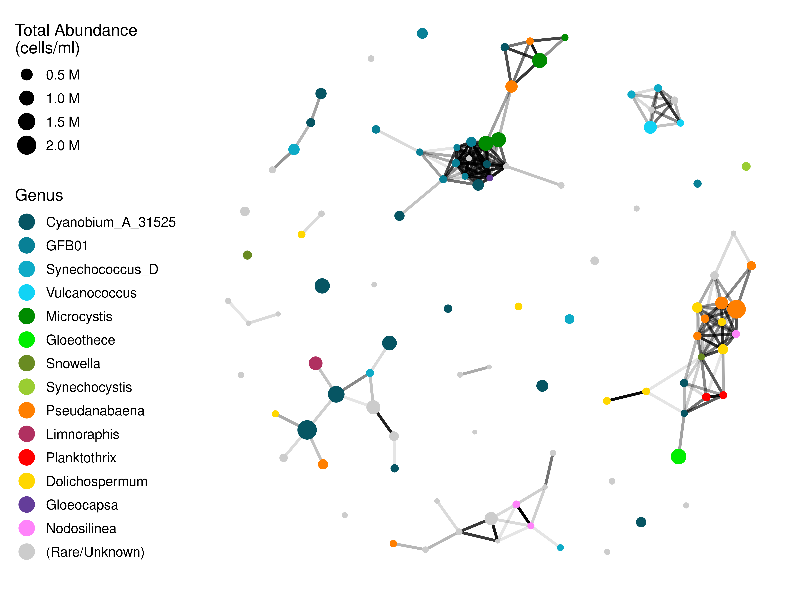
ggsave(filename = "test.png", dpi = 300, height = 6, width = 8)
clustered <- igraph::cluster_edge_betweenness(graph)
members <- igraph::membership(clustered)
mem_df <- data.frame(name = names(members),
membership = members)
top_mem<-
mem_df %>%
count(membership) %>%
slice_max(n = 3, order_by = n) %>%
pull(membership)
good_mem_df <-
mem_df %>%
mutate(membership = ifelse(membership %in% top_mem, membership, NA),
membership = factor(membership, labels = c(1:4)))
mem_graph <-
graph %>%
left_join(good_mem_df)
set.seed(314)
ggraph(mem_graph, layout = "fr")+
geom_edge_fan(aes(alpha = weight), show.legend = FALSE) +
geom_node_point(aes(color = membership, size = Total_Abund)) +
guides(color = guide_legend(override.aes = list(size = 5)),
size = guide_none())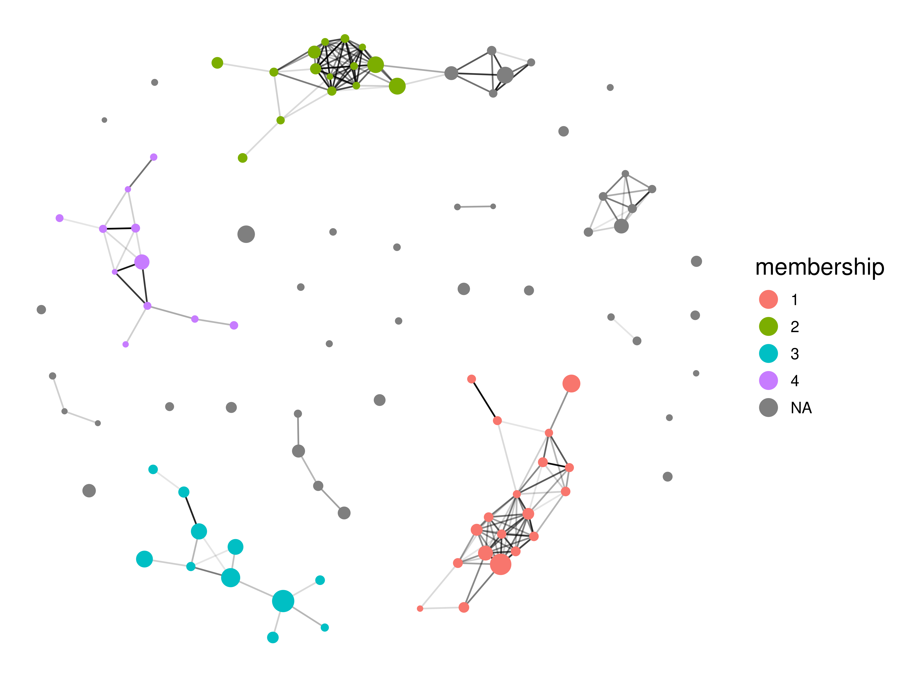
mem_asvs <- good_mem_df %>%
filter(!is.na(membership)) %>%
rename(ASV = name) %>%
filter(membership %in% c(1,2,3))Okay, let’s look at the composition of those clusters
top_cyano_asvs %>%
left_join(mem_asvs) %>%
filter(!is.na(membership)) %>%
left_join(asv_ids) %>%
mutate(Genus = str_remove(Genus, "g__"),
Genus = ifelse(is.na(Genus), "(Rare/Unknown)", Genus),
Genus = ifelse(Total_Abund < 100, "(Rare/Unknown)", Genus)) %>%
ggplot(aes(y = membership, x = Total_Abund, fill = Genus)) +
geom_col() +
scale_fill_manual(values = cyano_genus_colors)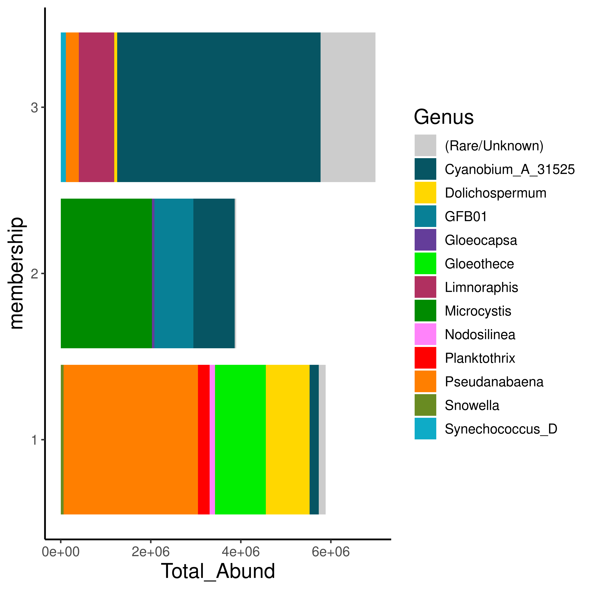
pacman::p_load(sf, terra, tmap, gstat, install = FALSE)
# Define some shapes and objects
raw_erie <- read_sf("data/spatial_imports/hydro_p_LakeErie/hydro_p_LakeErie.shp") %>%
st_transform(crs = "EPSG:4326")
erie_outline <- raw_erie %>%
st_union()
mem_cy_sf <-
cyano_melted %>%
select(Rep_ID, Abundance, ASV, Latitude, Longitude, Month) %>%
left_join(mem_asvs) %>%
filter(!is.na(membership)) %>%
group_by(Rep_ID, Month, Latitude, Longitude, membership) %>%
summarize(mem_abund = sum(Abundance)) %>%
mutate(Month = factor(Month, levels = c("May","August","September"))) %>%
st_as_sf(coords = c("Longitude","Latitude"), crs = "EPSG:4326")
mem_cy_sf %>%
dplyr::filter(Month != "May") %>%
mutate(membership = factor(membership, levels = c(2,1,3))) %>%
ggplot() +
geom_sf(data = erie_outline, fill = NA) +
geom_sf(aes(size = mem_abund, color = mem_abund), alpha = 1) +
facet_grid(membership~Month)+
scale_color_distiller(palette = "Spectral", limits = c(0,1.6e6), breaks = c(0, 0.5e6, 1e6, 1.5e6)) +
scale_size_continuous(limits = c(0,1.6e6), breaks = c(0, 0.5e6, 1e6, 1.5e6)) +
labs(color = "Cluster\nAbundance\n(cells/ml)", size = "Cluster\nAbundance\n(cells/ml)") +
guides(color= guide_legend(), size=guide_legend()) +
theme(axis.line = element_blank(),
axis.text = element_blank(),
axis.ticks = element_blank(),
strip.text.y = element_blank(),
legend.title = element_text(size = 12),
strip.text = element_text(size = 12))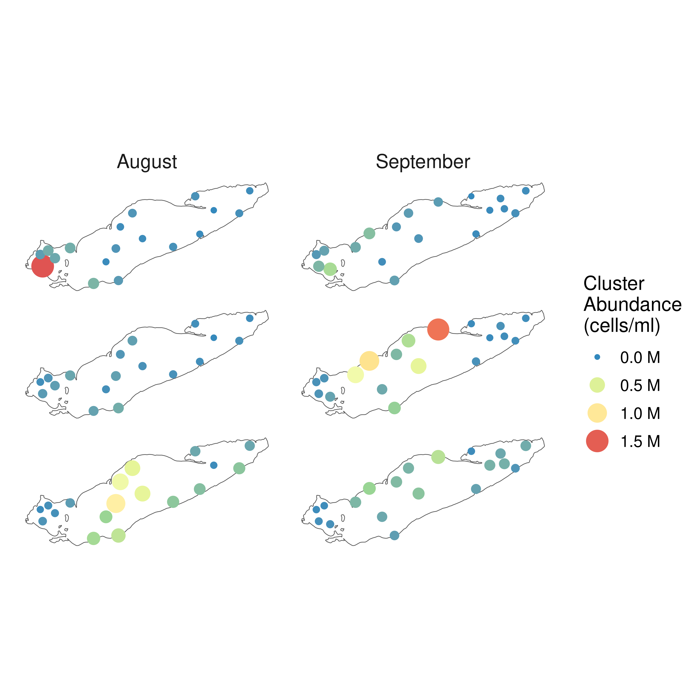
#ggsave(filename = "test.png", width = 6, height= 6, dpi = 300)mem_cy_sf %>%
ggplot() +
geom_sf(aes(size = mem_abund, color = mem_abund), alpha = 1) +
facet_grid(membership~Month)+
scale_color_distiller(palette = "Spectral") +
geom_sf(data = erie_outline, fill = NA) 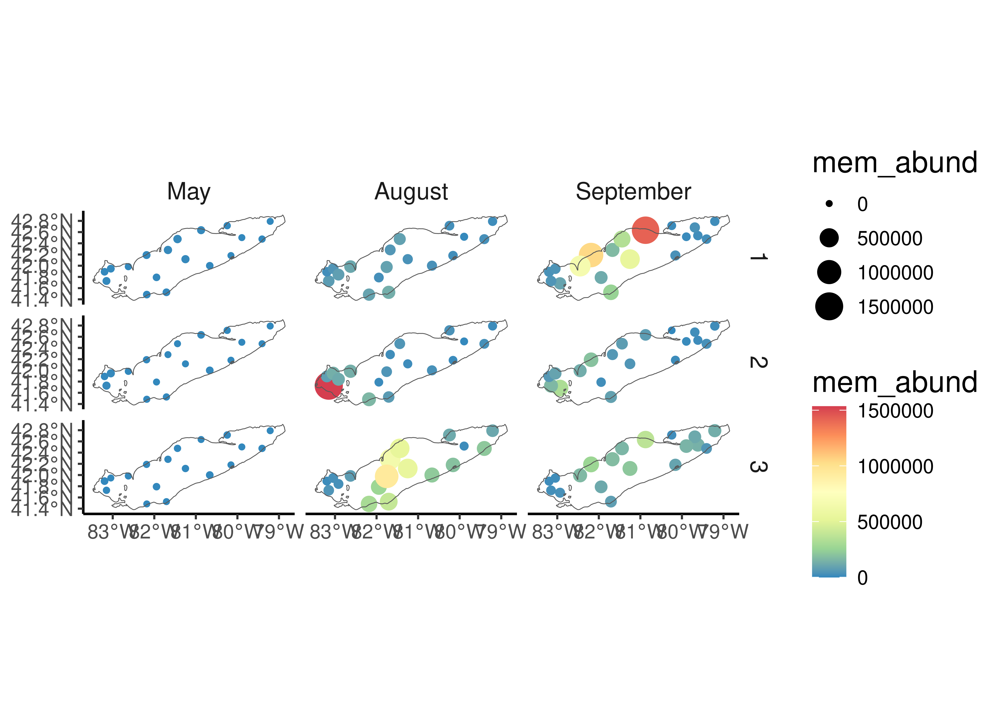
mem_cy_sf %>%
ungroup() %>%
group_by(membership) %>%
mutate(rel_abund = mem_abund / sum(mem_abund)) %>%
filter(Month != "May") %>%
ggplot() +
geom_sf(aes(size = rel_abund, color = rel_abund), alpha = 1) +
facet_grid(membership~Month)+
scale_color_distiller(palette = "Spectral") +
geom_sf(data = erie_outline, fill = NA) 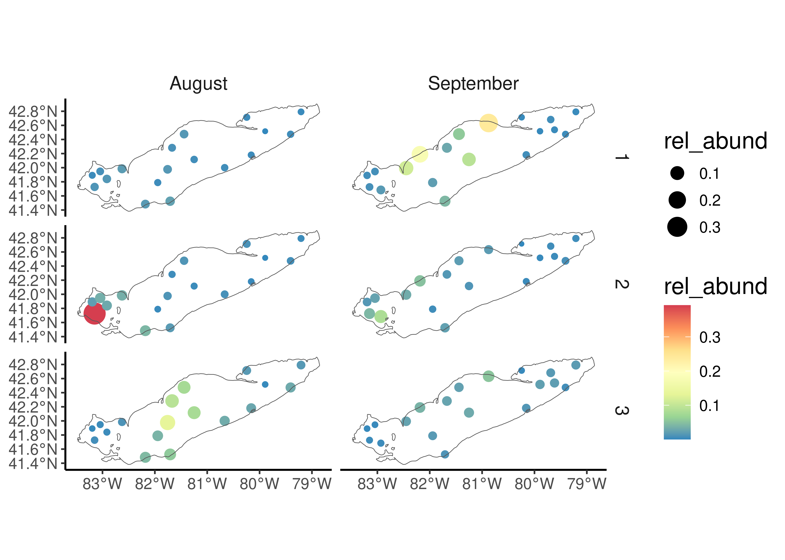
corrs <- seq(from = 0.5, to = 0.95, by = 0.05)
names(corrs) <- corrs
graphs <- map(corrs, \(x){
cy_cor_mat <-
cy_cor_res %>%
mutate(cor = ifelse(cor>=x&p<0.01, cor, 0)) %>%
select(var1, var2, cor) %>%
pivot_wider(names_from = var2, values_from = cor) %>%
column_to_rownames("var1") %>%
as.matrix()
adj_mat <- igraph::graph_from_adjacency_matrix(cy_cor_mat, weighted=T, mode="undirected", diag=F)
graph <- as_tbl_graph(adj_mat)
})
map(graphs, igraph::degree) %>%
bind_rows(.id = "Corr_Threshold") %>%
pivot_longer(!Corr_Threshold, names_to = "ASV", values_to = "Degree") %>%
ggplot(aes(x = as.numeric(Corr_Threshold), y = Degree)) +
ggbeeswarm::geom_beeswarm() +
geom_smooth(formula = y~log(x), method = "lm")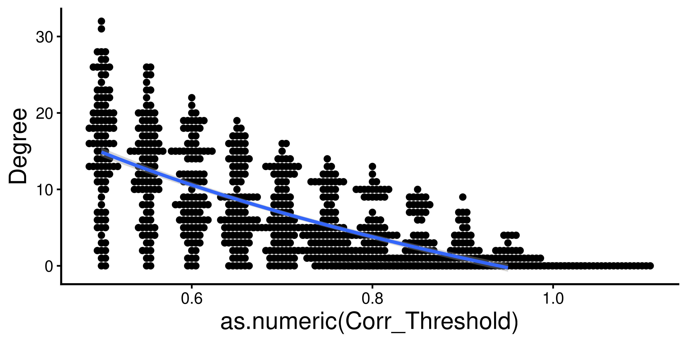
mods <- map(graphs, \(x){
clustered <- igraph::cluster_edge_betweenness(x)
igraph::modularity(clustered)
}) %>%
unlist()
data.frame(Corr = corrs,
Modularity = mods) %>%
ggplot(aes(x = corrs, y = Modularity)) +
geom_line() +
geom_point(size = 4) +
labs(x = "Minimum Correlation")map(graphs, \(x){
igraph::clique_num(x)
}) %>% unlist() 0.5 0.55 0.6 0.65 0.7 0.75 0.8 0.85 0.9 0.95
14 13 13 13 11 10 10 7 7 3 cy_dens <- map(graphs, \(x){
igraph::edge_density(x)
})Correlating Cyano Abund vs. Heterotroph Abund
Going by Clusters
nc_physeq <- abs_physeq %>%
subset_taxa(., Phylum != "p__Cyanobacteriota")
alpha_diversity <- estimate_richness(nc_physeq, measure = c("Shannon", "Observed"))
alpha_diversity Observed Shannon
KH_D001 283 3.611622
KH_D009 463 3.698616
KH_D017 371 3.591125
KH_D025 963 4.097638
KH_D032 1902 4.947302
KH_D040 661 3.486545
KH_D056 635 3.422676
KH_D063 858 3.825105
KH_D071 499 4.425884
KH_D079 171 3.111904
KH_D002 336 3.907756
KH_D010 637 4.276752
KH_D018 604 3.398232
KH_D026 579 3.325822
KH_D033 1171 4.181699
KH_D041 679 3.306785
KH_D057 1110 4.209646
KH_D064 1106 4.208462
KH_D003 555 4.205986
KH_D011 696 4.513795
KH_D019 435 3.559363
KH_D027 710 3.212695
KH_D034 1344 4.531169
KH_D042 751 3.245848
KH_D058 1011 4.169420
KH_D065 1608 4.320785
KH_D004 141 2.980285
KH_D012 823 3.919709
KH_D020 1257 4.489287
KH_D028 647 3.549342
KH_D035 753 3.592466
KH_D043 1856 4.306603
KH_D051 868 3.793665
KH_D059 840 3.343571
KH_D066 182 2.608218
KH_D074 809 3.488163
KH_D005 543 3.628499
KH_D013 650 4.034381
KH_D021 478 3.600856
KH_D029 1872 5.090455
KH_D036 2528 5.427880
KH_D044 825 3.432064
KH_D052 1065 4.170995
KH_D060 906 4.023620
KH_D067 1400 4.034261
KH_D075 1043 3.516689
KH_D083 1311 4.204169
KH_D006 1466 4.838492
KH_D022 1238 4.437602
KH_D030 649 3.237196
KH_D037 801 3.718693
KH_D045 1714 4.652658
KH_D053 1116 3.795298
KH_D061 2123 5.609233
KH_D076 136 3.557264
KH_D007 363 3.560741
KH_D015 494 3.932434
KH_D023 803 3.902819
KH_D031 2533 5.435677
KH_D038 2357 5.220922
KH_D046 2143 4.852850
KH_D054 863 3.573793
KH_D062 801 3.742689
KH_D069 1034 4.056082
KH_D077 1757 4.436829
KH_D008 698 4.465307
KH_D016 281 3.270600
KH_D039 1219 3.752767
KH_D047 1116 3.631267
KH_D055 2024 4.887296
KH_D070 1132 4.546861
KH_D078 1566 4.032507H <- alpha_diversity$Shannon
S1 <- alpha_diversity$Observed
S <- log(S1)
alpha_diversity$evenness <- H/S
alpha_diversity <- alpha_diversity %>%
rownames_to_column("DNA_ID") %>%
select(DNA_ID, evenness)
mem_cy_abunds <-
cyano_melted %>%
select(DNA_ID, Abundance, ASV) %>%
left_join(mem_asvs) %>%
filter(!is.na(membership)) %>%
group_by(DNA_ID, membership) %>%
summarize(Mem_Abund = sum(Abundance))
total_cy_stats <- cyano_melted %>%
filter(Abundance > 0) %>%
group_by(DNA_ID) %>%
summarize(Mem_Abund = sum(Abundance)) %>%
mutate(membership = "Total")
cy_stats <- cyano_melted %>%
filter(Abundance > 0) %>%
group_by(DNA_ID) %>%
summarize(Cy_Richness = n(),
Cy_Abundance = sum(Abundance))
all_cy_stats <- rbind(mem_cy_abunds, total_cy_stats) %>%
left_join(cy_stats)
joined <-
abs_physeq %>%
sample_data() %>%
data.frame() %>%
filter(Depth_Class == "S", DNA_ID != "KH_D076", Month != "May") %>%
left_join(all_cy_stats) %>%
left_join(alpha_diversity)
joined %>%
mutate(Month = factor(Month, levels = c("May","August","September")),
membership = factor(membership, levels = c("Total", "2","1","3"),
labels = c("Total","C1: Microcystis","C2: Pseudanabaena", "C3: Cyanobium"))) %>%
ggplot(aes(x = Mem_Abund, y = Richness-Cy_Richness)) +
geom_point(aes(color = Month)) +
ggpubr::stat_cor(show.legend = FALSE, method = "spearman",
cor.coef.name = "rho",
p.accuracy = 0.001) +
scale_color_manual(values = month_colors) +
scale_x_continuous(labels = scales::unit_format(unit = "M", scale = 1e-6))+
facet_wrap(~membership, scale = "free_x", nrow = 1) +
theme(legend.position = "right",
aspect.ratio = 1,
axis.text = element_text(size = 8)) +
labs(x = "Cyano Abundance/mL", y = "Heterotroph\nRichness") 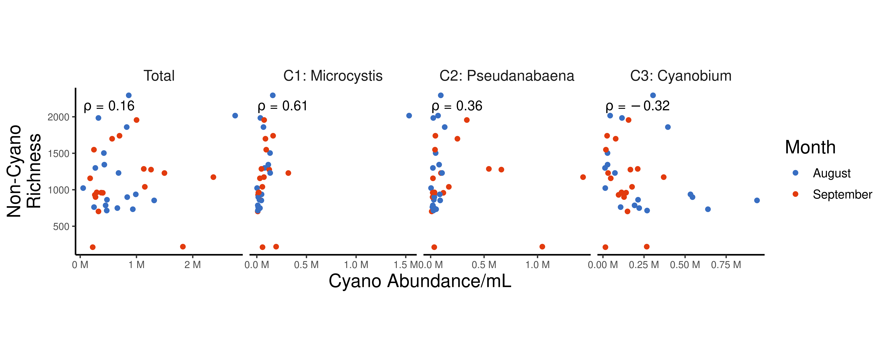
joined %>%
mutate(Month = factor(Month, levels = c("May","August","September")),
membership = factor(membership, levels = c("Total", "2","1","3"),
labels = c("Total","C1: Microcystis","C2: Pseudanabaena", "C3: Cyanobium"))) %>%
ggplot(aes(x = Mem_Abund, y = evenness)) +
geom_point(aes(color = Month)) +
ggpubr::stat_cor(show.legend = FALSE, method = "spearman",
cor.coef.name = "rho",
p.accuracy = 0.001) +
scale_color_manual(values = month_colors) +
scale_x_continuous(labels = scales::unit_format(unit = "M", scale = 1e-6))+
facet_wrap(~membership, scale = "free_x", nrow = 1) +
theme(legend.position = "right",
aspect.ratio = 1,
axis.text = element_text(size = 8)) +
labs(x = "Cyano Abundance/mL", y = "Hetertroph\nEvenness") 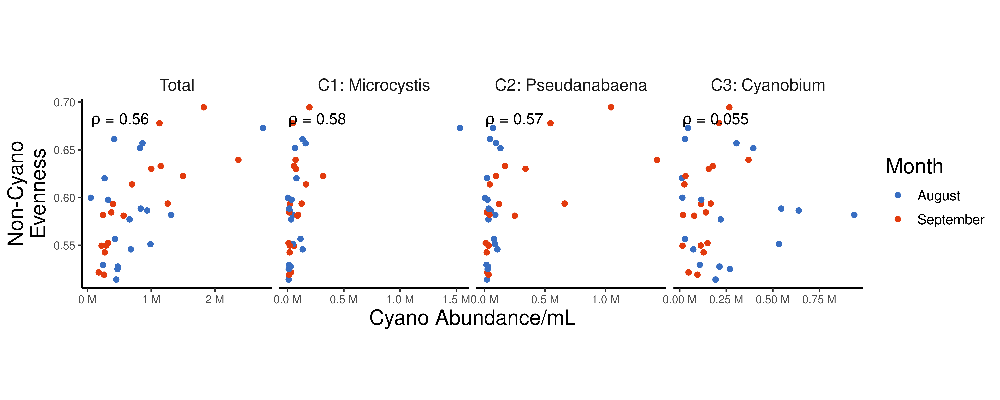
joined %>%
mutate(Month = factor(Month, levels = c("May","August","September")),
membership = factor(membership, levels = c("Total", "2","1","3"),
labels = c("Total","C1: Microcystis","C2: Pseudanabaena", "C3: Cyanobium"))) %>%
ggplot(aes(x = Mem_Abund, y = avg_cells_per_ml-Cy_Abundance)) +
geom_point(aes(color = Month)) +
ggpubr::stat_cor(show.legend = FALSE, method = "spearman",
cor.coef.name = "rho",
p.accuracy = 0.001) +
scale_color_manual(values = month_colors) +
scale_x_continuous(labels = scales::unit_format(unit = "M", scale = 1e-6))+
scale_y_continuous(labels = scales::unit_format(unit = "M", scale = 1e-6))+
facet_wrap(~membership, scale = "free_x", nrow = 1) +
theme(legend.position = "right",
aspect.ratio = 1,
axis.text = element_text(size = 8)) +
labs(x = "Cyano Abundance/mL", y = "Heterotroph\nAbundance/mL") 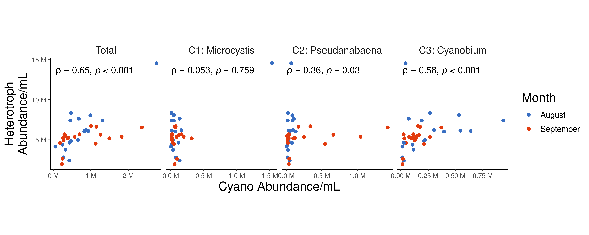
Alternative: r and p-value heat map
joined %>%
mutate(het_abund = avg_cells_per_ml - Cy_Abundance,
het_rich = Richness - Cy_Richness,
het_even = evenness,
het_rsg = het_rsg_per_ml,
het_rsg_perc = het_rsg_perc_pos) %>%
select(membership, Mem_Abund,het_abund, het_rich, het_even, het_rsg, het_rsg_perc) %>%
group_by(membership) %>%
rstatix::cor_test(vars = Mem_Abund, vars2 = starts_with("het"), method = "spearman", use = "pairwise.complete.obs") %>%
rstatix::adjust_pvalue() %>%
mutate(var2 = factor(var2, levels = c("het_rsg_perc","het_rsg","het_abund","het_even","het_rich"),
labels = c("% RSG +", "RSG+ /mL", "Abundance","Evenness","Richness")),
membership = factor(membership, levels = c("Total", "2","1","3"),
labels = c("Total","C1: Microcystis","C2: Pseudanabaena", "C3: Cyanobium"))) %>%
ggplot(aes(x = membership, y = var2, fill = cor, alpha = p.adj < 0.05)) +
geom_tile() +
geom_text(aes(label = round(cor, 2))) +
scale_fill_distiller(palette = "Spectral") +
scale_alpha_manual(values = c(0.2,1)) +
scale_y_discrete(expand = expansion(0)) +
scale_x_discrete(expand = expansion(0)) +
guides(alpha = "none") +
labs(y="Non-Cyano Metric",
fill = "Spearman's R")+
theme(axis.title.x = element_blank(),
axis.line = element_blank(),
axis.ticks = element_blank(),
axis.text.x = element_text(angle = 330, vjust = 1, hjust = 0, size = 12))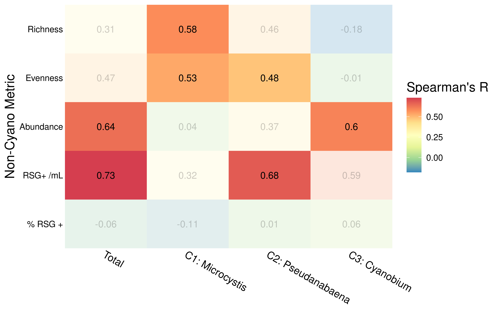
ggsave("test.png", width = 8, height = 5)joined %>%
filter(Month == "September", membership == "Total") %>%
rstatix::cor_test(rsg_pos_per_ml, ctd_temperature, method = "spearman", use = "pairwise.complete.obs")# A tibble: 1 × 6
var1 var2 cor statistic p method
<chr> <chr> <dbl> <dbl> <dbl> <chr>
1 rsg_pos_per_ml ctd_temperature 0.39 416 0.138 Spearmanjoined %>%
filter(membership == "Total") %>%
mutate(het_abund = avg_cells_per_ml - Cy_Abundance,
het_rich = Richness - Cy_Richness,
het_even = evenness,
het_rsg = het_rsg_per_ml,
het_rsg_perc = het_rsg_perc_pos,
tn_ratio = (tn_ug_n_l/14) / (tp_ug_p_l/31)) %>%
select(ctd_temperature, tn_ug_n_l, tp_ug_p_l, tn_ratio, het_abund, het_rich, het_even, het_rsg, het_rsg_perc) %>%
pivot_longer(ctd_temperature:tn_ratio, names_to = "Chem", values_to = "Value") %>%
group_by(Chem) %>%
rstatix::cor_test(vars = Value, vars2 = starts_with("het"), method = "spearman", use = "pairwise.complete.obs") %>%
rstatix::adjust_pvalue() %>%
mutate(var2 = factor(var2, levels = c("het_rsg_perc","het_rsg","het_abund","het_even","het_rich"),
labels = c("% RSG +", "RSG+ /mL", "Abundance","Evenness","Richness")),
Chem = factor(Chem, levels = c("ctd_temperature", "tn_ug_n_l","tp_ug_p_l","tn_ratio"),
labels = c("Temperature","Total N","Total P","Molar N:P"))) %>%
ggplot(aes(x = Chem, y = var2, fill = cor, alpha = p.adj < 0.05)) +
geom_tile() +
geom_text(aes(label = round(cor, 2))) +
scale_fill_distiller(palette = "Spectral") +
scale_alpha_manual(values = c(0.2,1)) +
scale_y_discrete(expand = expansion(0)) +
scale_x_discrete(expand = expansion(0)) +
guides(alpha = "none") +
labs(y="Non-Cyano Metric",
fill = "Spearman's R")+
theme(axis.title.x = element_blank(),
axis.line = element_blank(),
axis.ticks = element_blank(),
axis.text.x = element_text(angle = 330, vjust = 1, hjust = 0, size = 12))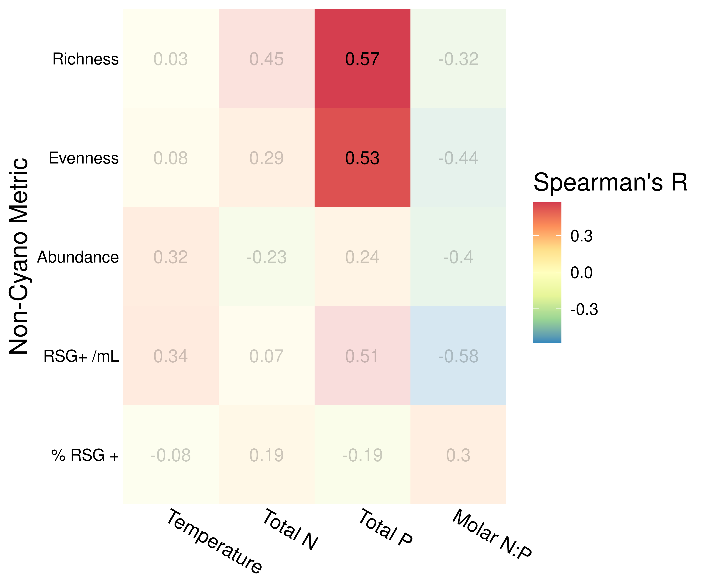
ggsave("test.png", width = 8, height = 5)flow_sf %>%
select(doc_mg_c_l, avg_cells_per_ml) %>%
unique() %>%
rstatix::cor_test(avg_cells_per_ml, doc_mg_c_l, method = "spearman")Error in `map()`:
ℹ In index: 1.
ℹ With name: vars.
Caused by error in `h()`:
! error in evaluating the argument 'x' in selecting a method for function 'unique': object 'flow_sf' not foundjoined %>%
mutate( membership = factor(membership, levels = c("Total", "2","1","3"),
labels = c("Total","C1: Microcystis","C2: Pseudanabaena", "C3: Cyanobium"))) %>%
ggplot(aes(x = tp_ug_p_l, y = Mem_Abund)) +
geom_point(aes(color = Month)) +
facet_wrap(~membership, nrow = 1) +
scale_y_log10(labels = scales::unit_format(unit = "M", scale = 1e-6)) +
ggpubr::stat_cor(show.legend = FALSE, method = "spearman",
cor.coef.name = "rho",
p.accuracy = 0.001) +
scale_color_manual(values = month_colors) +
labs(y = "Cyano Cluster Abundance/mL", x = "TP (ug P/L)") +
theme(legend.position = "right",
aspect.ratio = 1,
axis.text = element_text(size = 8))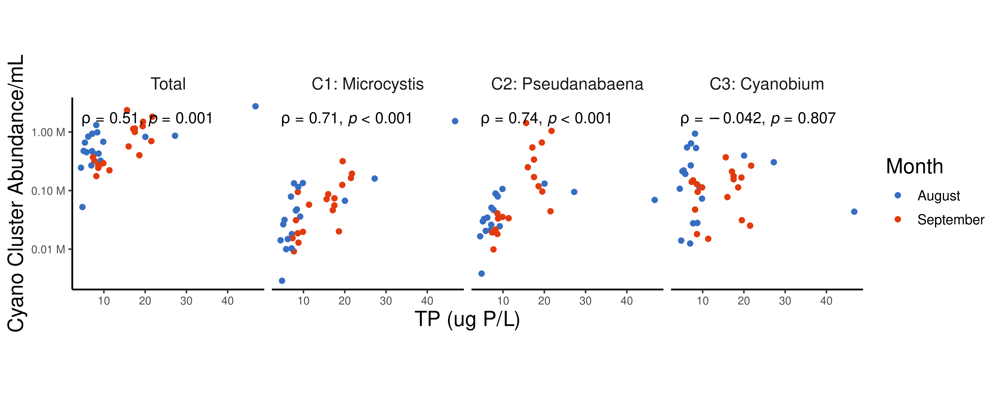
ggsave("test.png", width = 6, height = 5)joined %>%
filter(membership=="Total") %>%
mutate(Month = factor(Month, levels = c("May","August","September"))) %>%
ggplot(aes(x = Cy_Richness, y = Richness-Cy_Richness, color = Month)) +
geom_point() +
ggpubr::stat_cor(show.legend = FALSE, method = "spearman",
cor.coef.name = "rho",
p.accuracy = 0.001) +
scale_color_manual(values = month_colors) +
facet_wrap(~Month) +
theme(legend.position = "none",
aspect.ratio = 1) +
labs(x = "Cyano Richness", y = "Heterotroph\nRichness") 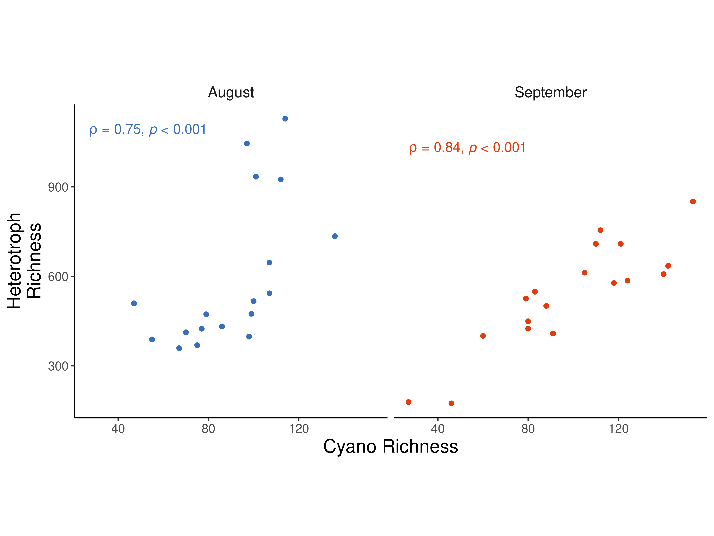
joined %>%
filter(membership=="Total") %>%
mutate(Month = factor(Month, levels = c("May","August","September"))) %>%
ggplot(aes(x = Cy_Abundance/1e6, y = (avg_cells_per_ml - Cy_Abundance)/1e6, color = Month)) +
geom_point() +
ggpubr::stat_cor(show.legend = FALSE, method = "spearman", cor.coef.name = "rho",
p.accuracy = 0.001) +
scale_color_manual(values = month_colors) +
facet_wrap(~Month) +
theme(legend.position = "none",
aspect.ratio = 1) +
labs(x = "Cyano Abundance (million cells/ml)", y = "Heterotroph Abundance\n(million cells/ml)")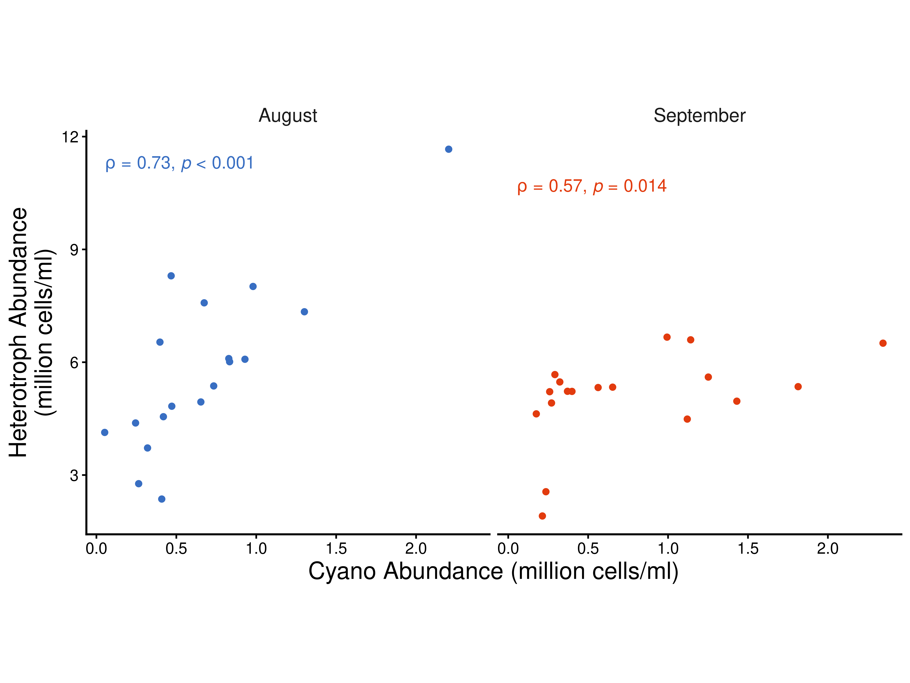
ggsave(filename = "test.png", width = 8, height = 6)joined %>%
filter(membership=="Total") %>%
filter(Month == "September") %>%
mutate(
membership = factor(membership, levels = c("Total", "2","1","3"),
labels = c("Total","C1: Microcystis","C2: Pseudanabaena", "C3: Cyanobium"))) %>%
ggplot(aes(x = Mem_Abund, y = rsg_pos_per_ml)) +
geom_point(aes(color = Month)) +
ggpubr::stat_cor(show.legend = FALSE, method = "spearman",
cor.coef.name = "rho",
p.accuracy = 0.001) +
scale_color_manual(values = month_colors) +
scale_x_continuous(labels = scales::unit_format(unit = "M", scale = 1e-6))+
scale_y_continuous(labels = scales::unit_format(unit = "M", scale = 1e-6))+
facet_wrap(~membership, scale = "free_x", nrow = 1) +
theme(legend.position = "right",
aspect.ratio = 1,
axis.text = element_text(size = 8)) +
labs(x = "Cyano Abundance/mL", y = "RSG + / mL\n") 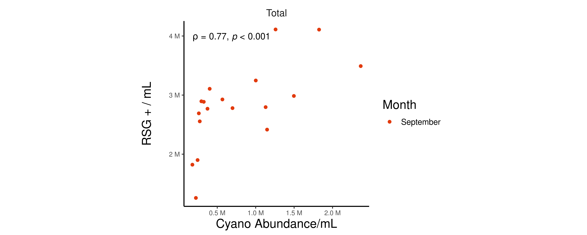
joined %>%
filter(membership=="Total") %>%
filter(Month == "September") %>%
mutate(
membership = factor(membership, levels = c("Total", "2","1","3"),
labels = c("Total","C1: Microcystis","C2: Pseudanabaena", "C3: Cyanobium"))) %>%
ggplot(aes(x = Mem_Abund, y = rsg_perc_pos)) +
geom_point(aes(color = Month)) +
ggpubr::stat_cor(show.legend = FALSE, method = "spearman",
cor.coef.name = "rho",
p.accuracy = 0.001) +
scale_color_manual(values = month_colors) +
scale_x_continuous(labels = scales::unit_format(unit = "M", scale = 1e-6))+
facet_wrap(~membership, scale = "free_x", nrow = 1) +
theme(legend.position = "right",
aspect.ratio = 1,
axis.text = element_text(size = 8)) +
labs(x = "Cyano Abundance/mL", y = "% RSG +\n") 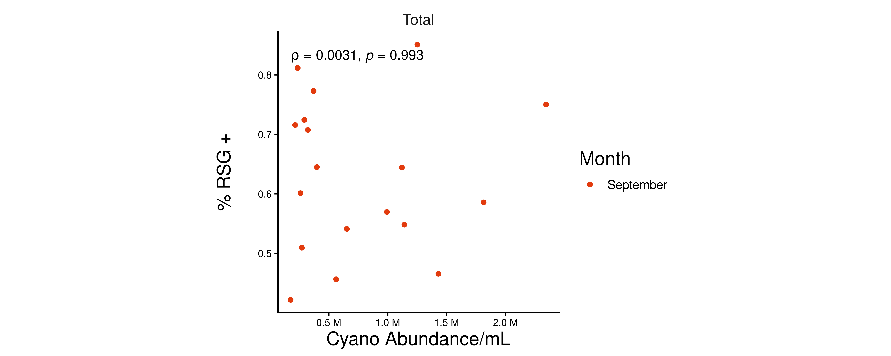
joined %>%
filter(membership=="Total") %>%
filter(Month == "September") %>%
mutate(
membership = factor(membership, levels = c("Total", "2","1","3"),
labels = c("Total","C1: Microcystis","C2: Pseudanabaena", "C3: Cyanobium"))) %>%
ggplot(aes(x = Mem_Abund, y = rsg_pos_per_ml-Cy_Abundance)) +
geom_point(aes(color = Month)) +
ggpubr::stat_cor(show.legend = FALSE, method = "spearman",
cor.coef.name = "rho",
p.accuracy = 0.001) +
scale_color_manual(values = month_colors) +
scale_x_continuous(labels = scales::unit_format(unit = "M", scale = 1e-6))+
scale_y_continuous(labels = scales::unit_format(unit = "M", scale = 1e-6))+
facet_wrap(~membership, scale = "free_x", nrow = 1) +
theme(legend.position = "right",
aspect.ratio = 1,
axis.text = element_text(size = 8)) +
labs(x = "Cyano Abundance/mL", y = "RSG + / mL-\nCyano Cells") 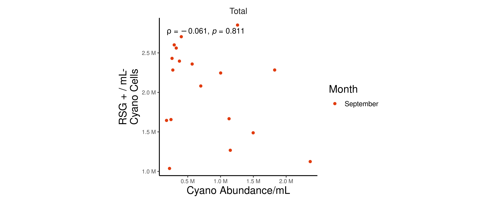
ggsave("test.png", width = 10, height = 4)joined %>%
filter(membership=="Total") %>%
mutate(Month = factor(Month, levels = c("May","August","September"))) %>%
ggplot(aes(x = Cy_Abundance/1e6, y = rsg_pos_per_ml/1e6, color = Month)) +
geom_point() +
ggpubr::stat_cor(show.legend = FALSE, method = "spearman", cor.coef.name = "rho",
p.accuracy = 0.001) +
scale_color_manual(values = month_colors) +
theme(legend.position = "none",
aspect.ratio = 1,
strip.text = element_blank()) +
labs(x = "Cyano Abundance (million cells/ml)", y = "RSG+ Cells\n(millions/ml)")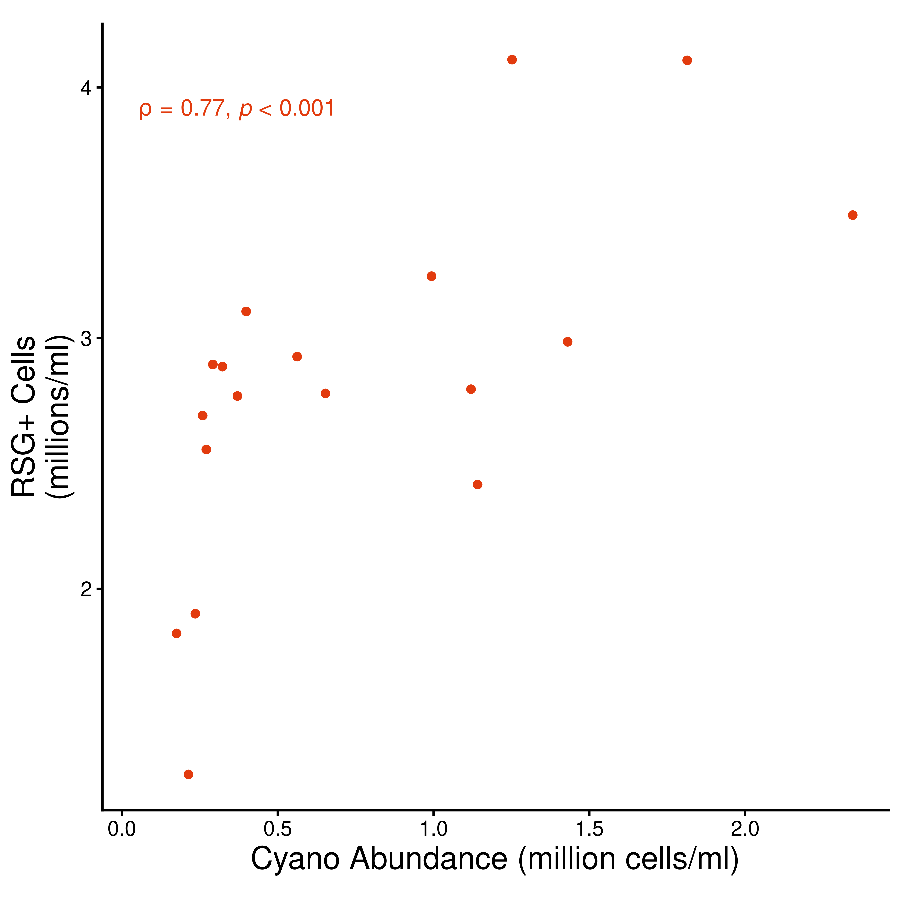
joined %>%
filter(membership=="Total") %>%
ggplot(aes(x = ctd_temperature, y = avg_cells_per_ml)) +
geom_point(aes(color = Month)) +
ggpubr::stat_cor(show.legend = FALSE, method = "spearman", cor.coef.name = "rho") +
scale_color_manual(values = month_colors) +
scale_y_continuous(labels = scales::unit_format(unit = "M", scale = 1e-6)) +
theme(legend.position = "none",
aspect.ratio = 1,
strip.text = element_blank()) +
labs(x = "Temperature (°C)", y = "Heterotroph\nAbundance / mL ")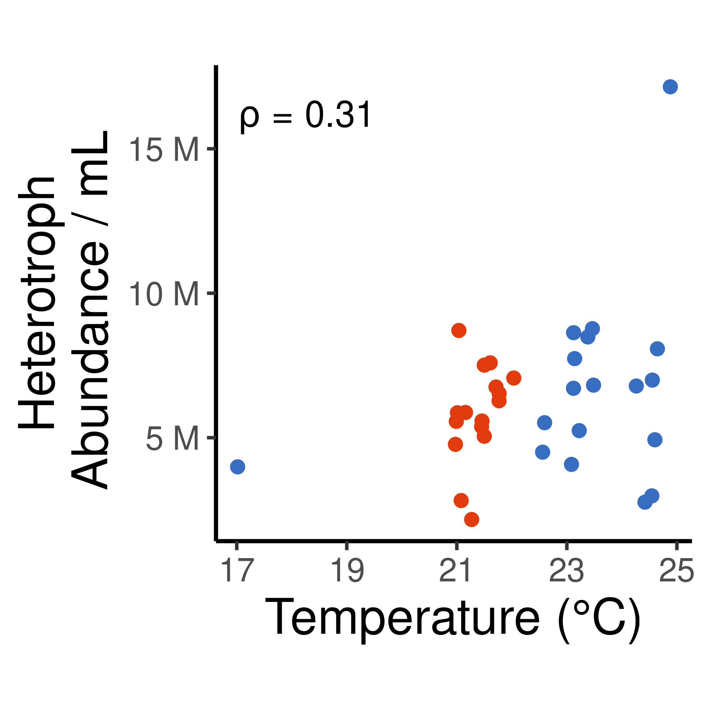
ggsave("test.png", width = 3, height = 3)
joined %>%
filter(membership=="Total") %>%
ggplot(aes(x = ctd_temperature, y = Richness)) +
geom_point(aes(color = Month)) +
ggpubr::stat_cor(show.legend = FALSE, method = "spearman", cor.coef.name = "rho") +
scale_color_manual(values = month_colors) +
theme(legend.position = "none",
aspect.ratio = 1,
strip.text = element_blank()) +
labs(x = "Temperature (°C)", y = "Heterotroph Richness")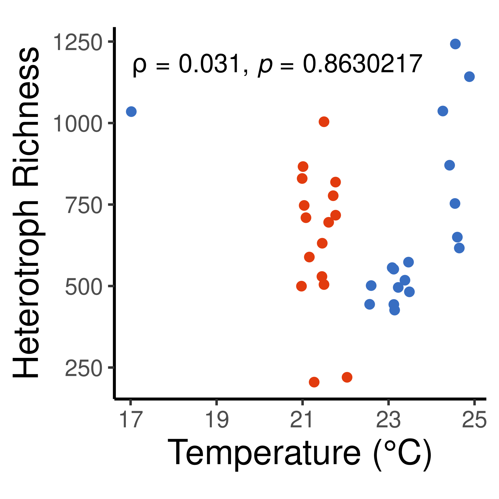
joined %>%
filter(membership=="Total") %>%
ggplot(aes(x = ctd_temperature, y = evenness)) +
geom_point(aes(color = Month)) +
ggpubr::stat_cor(show.legend = FALSE, method = "spearman", cor.coef.name = "rho") +
scale_color_manual(values = month_colors) +
theme(legend.position = "none",
aspect.ratio = 1,
strip.text = element_blank()) +
labs(x = "Temperature (°C)", y = "Heterotroph Evenness")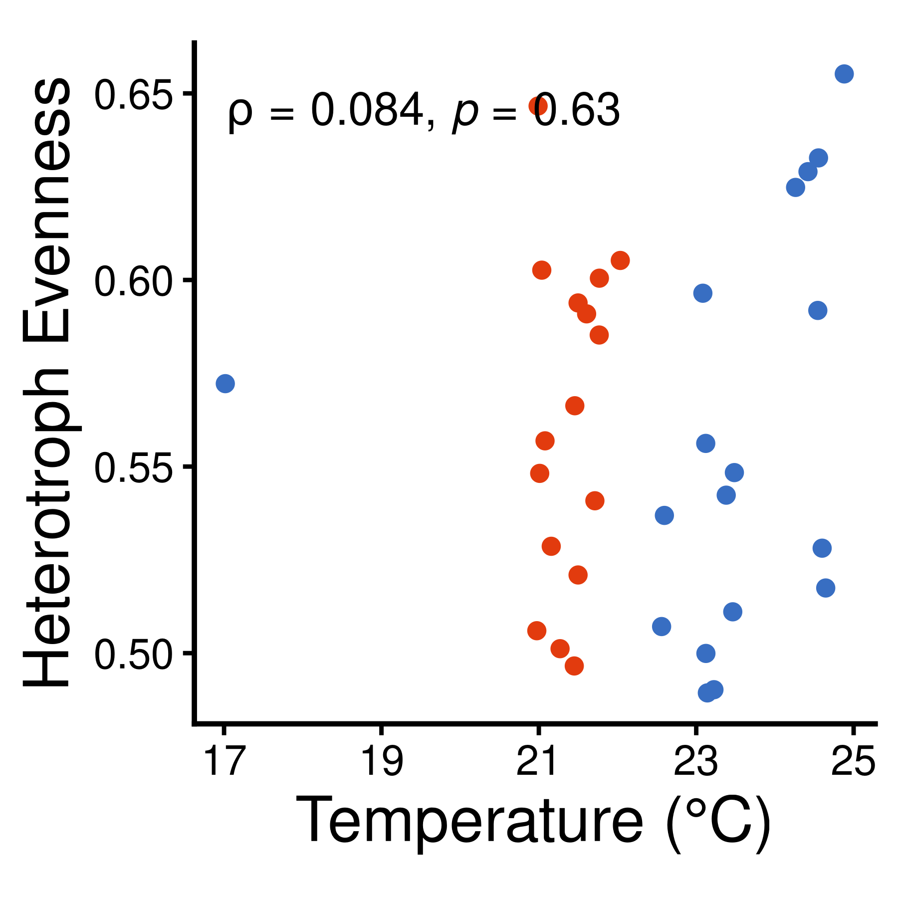
joined %>%
filter(membership=="Total") %>%
ggplot(aes(x = ctd_temperature, y = rsg_pos_per_ml)) +
geom_point(aes(color = Month)) +
ggpubr::stat_cor(show.legend = FALSE, method = "spearman", cor.coef.name = "rho") +
scale_color_manual(values = month_colors) +
scale_y_continuous(labels = scales::unit_format(unit = "M", scale = 1e-6)) +
theme(legend.position = "none",
aspect.ratio = 1,
strip.text = element_blank()) +
labs(x = "Temperature (°C)", y = "RSG + / mL ")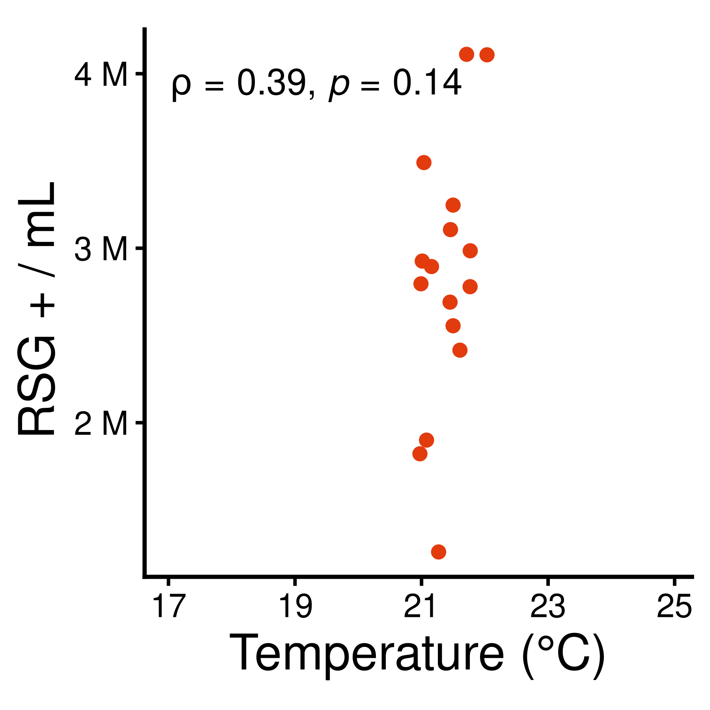
joined %>%
filter(membership=="Total") %>%
ggplot(aes(x = ctd_temperature, y = rsg_perc_pos)) +
geom_point(aes(color = Month)) +
ggpubr::stat_cor(show.legend = FALSE, method = "spearman", cor.coef.name = "rho") +
scale_color_manual(values = month_colors) +
theme(legend.position = "none",
aspect.ratio = 1,
strip.text = element_blank()) +
labs(x = "Temperature (°C)", y = "% RGS +")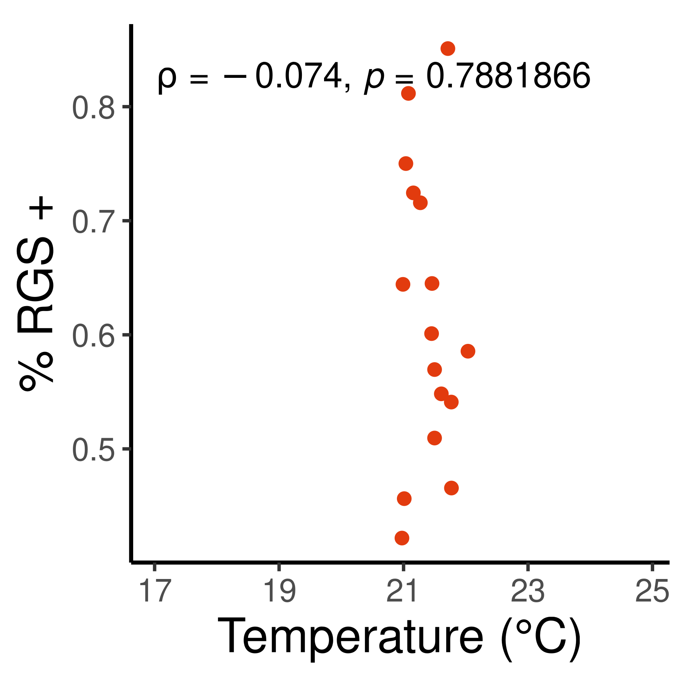
joined %>%
filter(membership=="Total") %>%
ggplot(aes(x = Cy_Abundance, y = avg_cells_per_ml - Cy_Abundance)) +
geom_point() +
ggpubr::stat_cor(show.legend = FALSE, method = "spearman", cor.coef.name = "rho", p.accuracy = 0.001) +
scale_color_manual(values = month_colors) +
scale_y_continuous(labels = scales::unit_format(unit = "M", scale = 1e-6)) +
scale_x_continuous(labels = scales::unit_format(unit = "M", scale = 1e-6)) +
theme(legend.position = "none",
aspect.ratio = 1,
strip.text = element_blank()) +
labs(x = "Cyanobacteria / mL", y = "\nHeterotrophs / mL")joined %>%
filter(membership=="Total") %>%
ggplot(aes(x = Cy_Abundance, y = het_rsg_per_ml)) +
geom_point() +
ggpubr::stat_cor(show.legend = FALSE, method = "spearman", cor.coef.name = "rho", p.accuracy = 0.001) +
scale_color_manual(values = month_colors) +
scale_y_continuous(labels = scales::unit_format(unit = "M", scale = 1e-6)) +
scale_x_continuous(labels = scales::unit_format(unit = "M", scale = 1e-6)) +
theme(legend.position = "none",
aspect.ratio = 1,
strip.text = element_blank()) +
labs(x = "Cyanobacteria / mL", y = "Respiring\nHeterotrophs / mL")ggsave("test.png", width = 4, height= 4)
joined %>%
filter(membership=="Total") %>%
ggplot(aes(x = Cy_Abundance, y = rsg_pos_per_ml)) +
geom_point() +
ggpubr::stat_cor(show.legend = FALSE, method = "spearman", cor.coef.name = "rho", p.accuracy = 0.001) +
scale_color_manual(values = month_colors) +
scale_y_continuous(labels = scales::unit_format(unit = "M", scale = 1e-6)) +
scale_x_continuous(labels = scales::unit_format(unit = "M", scale = 1e-6)) +
theme(legend.position = "none",
aspect.ratio = 1,
strip.text = element_blank()) +
labs(x = "Cyanobacteria / mL", y = "Metabolically Active\nCells / mL")joined %>%
filter(membership=="Total") %>%
group_by(DNA_ID) %>%
mutate(Relative_Hets = (avg_cells_per_ml - Cy_Abundance) / avg_cells_per_ml) %>%
ggplot(aes(x = Cy_Abundance, y = Relative_Hets)) +
geom_point() +
ggpubr::stat_cor(show.legend = FALSE, method = "spearman", cor.coef.name = "rho", p.accuracy = 0.001) +
scale_x_continuous(labels = scales::unit_format(unit = "M", scale = 1e-6)) +
scale_color_manual(values = month_colors) +
theme(legend.position = "none",
aspect.ratio = 1,
strip.text = element_blank()) +
labs(x = "Cyanobacteria / mL", y = "Heterotroph\n Relative Abundance")joined %>%
mutate(Month = factor(Month, levels = c("August","September"))) %>%
ggplot(aes(x = Cy_Abundance/1e6, y = Richness-Cy_Richness, color = Month)) +
geom_point() +
ggpubr::stat_cor(show.legend = FALSE, method = "spearman", cor.coef.name = "rho",
p.accuracy = 0.001) +
scale_color_manual(values = month_colors) +
facet_wrap(~Month) +
theme(legend.position = "none",
aspect.ratio = 1) +
labs(x = "Cyano Abundance (million cells/ml)", y = "Heterotroph\nRichness")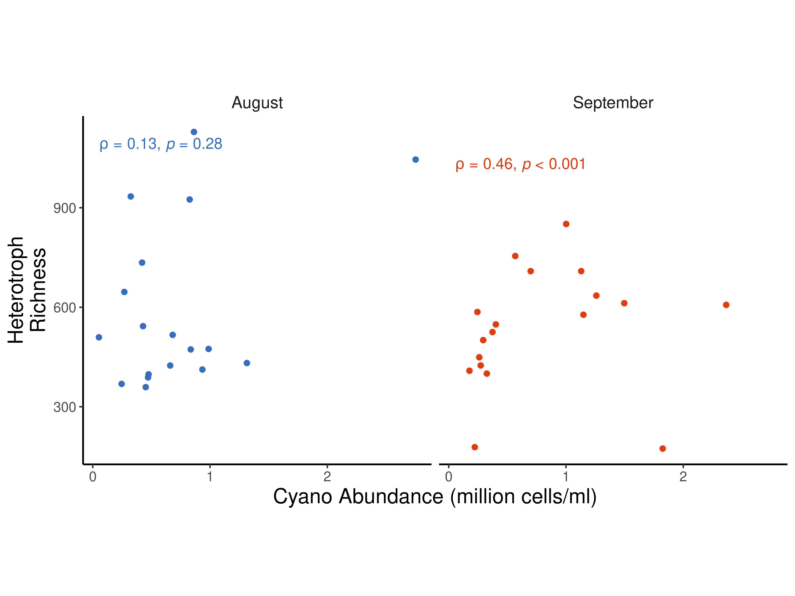
joined %>%
mutate(Month = factor(Month, levels = c("May","August","September"))) %>%
ggplot(aes(x = Cy_Richness, y = (avg_cells_per_ml - Cy_Abundance)/1e6, color = Month)) +
geom_point() +
ggpubr::stat_cor(show.legend = FALSE, method = "spearman", cor.coef.name = "rho",
p.accuracy = 0.001) +
scale_color_manual(values = month_colors) +
facet_wrap(~Month) +
theme(legend.position = "none",
aspect.ratio = 1) +
labs(x = "Cyano Richness", y = "Heterotroph Abundance\n(million cells/ml)")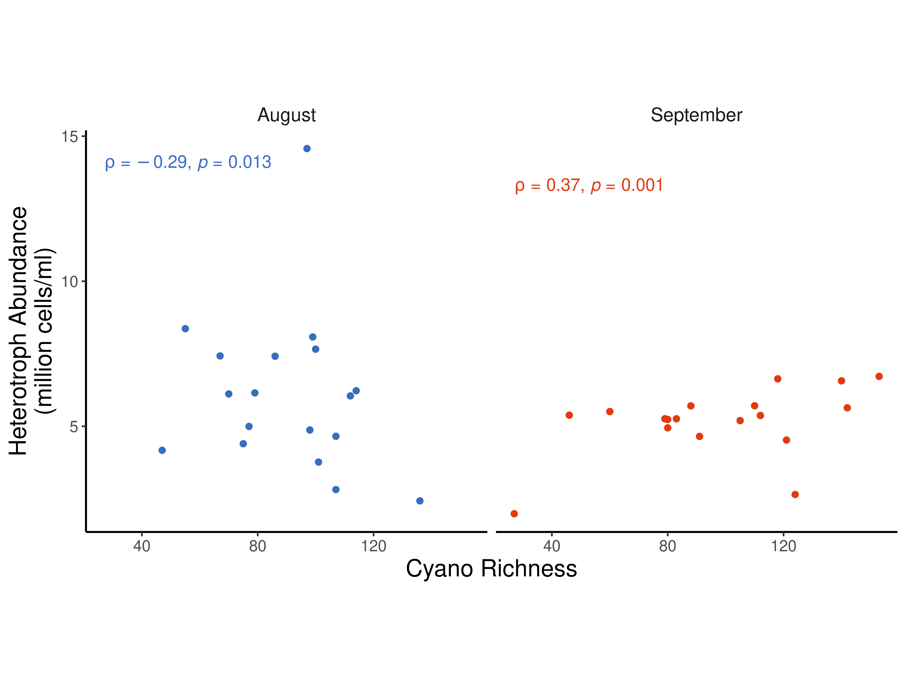
joined %>%
mutate(Month = factor(Month, levels = c("May","August","September"))) %>%
ggplot(aes(x = ctd_temperature, y = Richness-Cy_Richness, color = Month)) +
geom_point() +
ggpubr::stat_cor(show.legend = FALSE, method = "spearman") +
scale_color_manual(values = month_colors) +
facet_wrap(~Month) +
theme(legend.position = "none",
aspect.ratio = 1) +
labs(x = "Temperature (°C)", y = "Heterotroph Richness")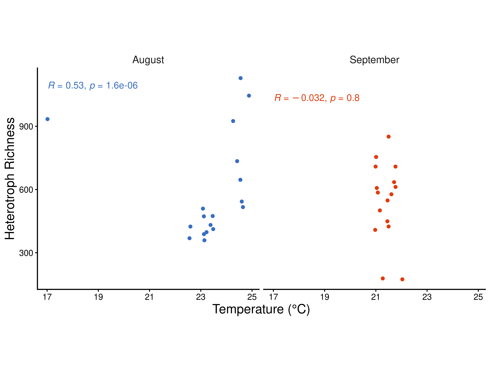
joined %>%
mutate(Month = factor(Month, levels = c("May","August","September"))) %>%
ggplot(aes(x = ctd_temperature, y = (avg_cells_per_ml - Cy_Abundance)/1e6, color = Month)) +
geom_point() +
ggpubr::stat_cor(show.legend = FALSE, method = "spearman") +
scale_color_manual(values = month_colors) +
facet_wrap(~Month) +
theme(legend.position = "none",
aspect.ratio = 1) +
labs(x = "Temperature (°C)", y = "Heterotroph Abundance\n(million cells/ml)")
joined %>%
mutate(Month = factor(Month, levels = c("May","August","September"))) %>%
ggplot(aes(x = ctd_temperature, y = (avg_cells_per_ml - Cy_Abundance)/1e6, color = Month)) +
geom_point() +
ggpubr::stat_cor(show.legend = FALSE, method = "spearman") +
scale_color_manual(values = month_colors) +
facet_wrap(~Month) +
theme(legend.position = "none",
aspect.ratio = 1) +
labs(x = "Temperature (°C)", y = "Heterotroph Abundance\n(million cells/ml)")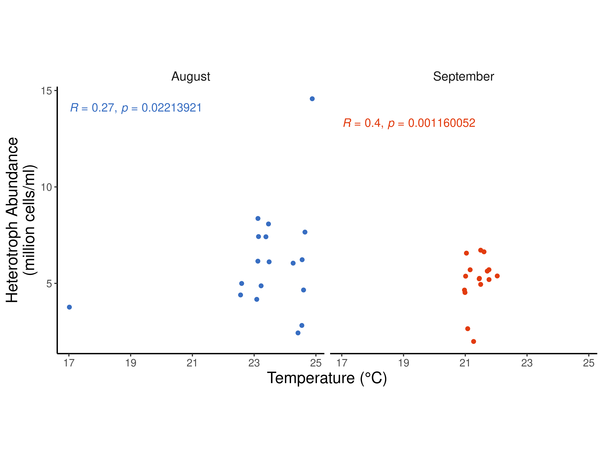
Now euks
load("data/07_Alpha_Diversity/euk_diversity_physeq.RData")
euk_stats <-
euk_diversity_physeq %>%
sample_data() %>%
data.frame() %>%
filter(Depth_Class == "S", DNA_ID != "KH_D076") %>%
left_join(all_cy_stats)
euk_stats %>%
filter(Month != "May") %>%
mutate(
membership = factor(membership, levels = c("Total", "2","1","3"),
labels = c("Total","C1: Microcystis","C2: Pseudanabaena", "C3: Cyanobium"))) %>%
ggplot(aes(x = Mem_Abund, y = Richness)) +
geom_point(aes(color = Month)) +
ggpubr::stat_cor(show.legend = FALSE, method = "spearman",
cor.coef.name = "rho",
p.accuracy = 0.001) +
scale_color_manual(values = month_colors) +
scale_x_continuous(labels = scales::unit_format(unit = "M", scale = 1e-6))+
facet_wrap(~membership, scale = "free_x", nrow = 1) +
theme(legend.position = "right",
aspect.ratio = 1,
axis.text = element_text(size = 8)) +
labs(x = "Cyano Abundance/mL", y = "Eukaryotic\nRichness") 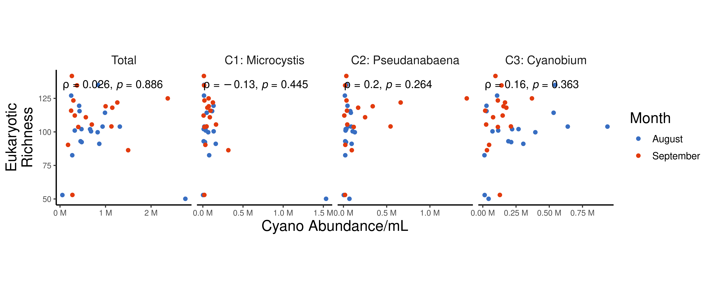
ggsave("test.png", width = 10, height = 4)
euk_stats %>%
filter(Month != "May") %>%
mutate(Month = factor(Month, levels = c("May","August","September"))) %>%
ggplot(aes(x = Cy_Abundance/1e6, y = Richness, color = Month)) +
geom_point() +
ggpubr::stat_cor(show.legend = FALSE) +
scale_color_manual(values = month_colors) +
facet_wrap(~Month) +
theme(legend.position = "none") +
labs(x = "Cyano Abundance (million cells/ml)", y = "Eukaryotic\nRichness")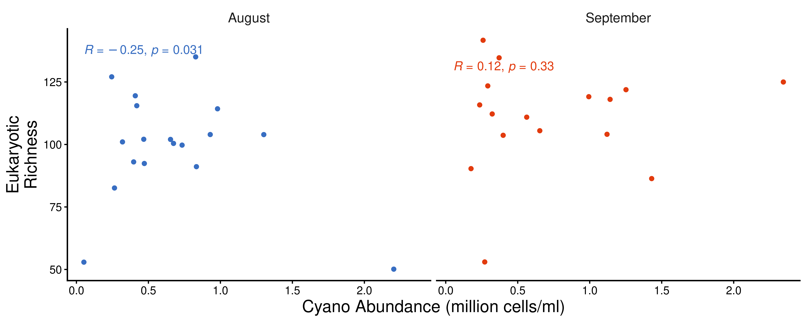
Heterotroph Network
all_asv_ids <- abs_physeq %>%
tax_table() %>%
data.frame() %>%
select(ASV, Genus, Phylum) %>%
mutate(Genus = str_remove(Genus, "g__"))
all_asv_ids %>%
filter(ASV %in% top_asvs) %>%
count(Phylum) %>%arrange(n) Phylum n
1 p__Desulfobacterota_E 1
2 p__Desulfobacterota_G_459546 1
3 p__Thermosulfidibacterota 1
4 p__Nitrospirota_A_437815 2
5 p__Spirochaetota 2
6 p__Patescibacteria 3
7 p__Desulfobacterota_G_459543 5
8 p__Armatimonadota 6
9 p__Chlamydiota 6
10 p__Bdellovibrionota_461973 7
11 p__Dependentiae 7
12 p__Gemmatimonadota 8
13 p__Acidobacteriota 10
14 p__Chloroflexota 11
15 <NA> 15
16 p__Myxococcota_A_473307 25
17 p__Bdellovibrionota_473306 31
18 p__Actinomycetota 73
19 p__Verrucomicrobiota 77
20 p__Planctomycetota 93
21 p__Cyanobacteriota 120
22 p__Bacteroidota 183
23 p__Pseudomonadota 313all_asv_ids %>%
filter(ASV %in% top_asvs) %>%
count(Phylum) %>% pull(n) %>% sum()[1] 1000all_asv_abunds <-
abs_physeq %>%
psmelt() %>%
filter(Depth_Class == "S", DNA_ID != "KH_D076") %>%
group_by(ASV) %>%
summarize(Total_Abund = sum(Abundance))
# cor_res <-
# abs_melted %>%
# filter(ASV %in% c(top_asvs, top_cyano_asvs$ASV)) %>%
# select(ASV, Rep_ID, Abundance) %>%
# left_join(wide_cy) %>%
# nest_by(ASV) %>%
# mutate(corr_results = list(rstatix::cor_test(data, vars = Abundance, vars2 = prok_names, method = "spearman")))
#
# save(cor_res, file = "data/10_Cyano_Species_Distribution/cor_res.RData")
load("data/10_Cyano_Species_Distribution/cor_res.RData")
# het_graphs_nocentr_filter <- map(corrs, \(x){
#
# cor_mat <-
# cor_res %>%
# unnest(corr_results) %>%
# mutate(cor = ifelse(cor>=x&p<0.01, cor, 0)) %>%
# select(ASV, var2, cor) %>%
# pivot_wider(names_from = var2, values_from = cor) %>%
# column_to_rownames("ASV") %>%
# as.matrix()
#
# adj_mat <- igraph::graph_from_biadjacency_matrix(cor_mat, weighted=T, directed = FALSE)
#
# graph <- as_tbl_graph(adj_mat) %>%
# as_tbl_graph(adj_mat) %>%
# left_join(all_asv_ids, by = c("name" = "ASV")) %>%
# left_join(all_asv_abunds, by = c("name" = "ASV"))
# })
#
# het_mods <- map(het_graphs_nocentr_filter, \(x){
# clustered <- igraph::cluster_edge_betweenness(x)
#
# igraph::modularity(clustered)
#
# }) %>%
# unlist()
#
#
#
# het_graphs_nocyanos_filter <- map(corrs, \(x){
#
# cor_mat <-
# cor_res %>%
# unnest(corr_results) %>%
# mutate(cor = ifelse(cor>=x&p<0.01, cor, 0)) %>%
# select(ASV, var2, cor) %>%
# pivot_wider(names_from = var2, values_from = cor) %>%
# column_to_rownames("ASV") %>%
# as.matrix()
#
# adj_mat <- igraph::graph_from_biadjacency_matrix(cor_mat, weighted=T, directed = FALSE)
#
# graph <- as_tbl_graph(adj_mat) %>%
# as_tbl_graph(adj_mat) %>%
# left_join(all_asv_ids, by = c("name" = "ASV")) %>%
# left_join(all_asv_abunds, by = c("name" = "ASV")) %>%
# dplyr::filter(
# !((!type)&Phylum == "p__Cyanobacteriota"))
# })
#
# het_mods_nocy <- map(het_graphs_nocyanos_filter, \(x){
# clustered <- igraph::cluster_edge_betweenness(x)
#
# igraph::modularity(clustered)
#
# }) %>%
# unlist()
#
#
# het_mod_df <- data.frame(Corr = corrs,
# Modularity_WithCyanos = het_mods,
# Modularity_NoCyanos = het_mods_nocy)
# save(het_mod_df, file = "data/10_Cyano_Species_Distribution/het_mod_df.RData")
load(file = "data/10_Cyano_Species_Distribution/het_mod_df.RData")
het_mod_df %>%
pivot_longer(Modularity_WithCyanos:Modularity_NoCyanos, names_to = "Network", values_to = "Modularity") %>%
ggplot(aes(x = Corr, y = Modularity, color = Network)) +
geom_line() +
geom_point(size = 4) +
scale_color_manual(values = c("#643D9A", "limegreen"), labels = c("No Cyanos", "With Cyanos")) +
labs(x = "Minimum Correlation")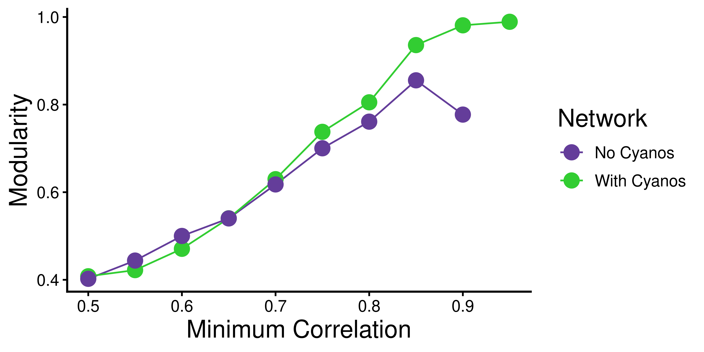
ggsave("test.png", width = 6, height = 3)het_graphs <- map(corrs, \(x){
cor_mat <-
cor_res %>%
unnest(corr_results) %>%
mutate(cor = ifelse(cor>=x&p<0.01, cor, 0)) %>%
select(ASV, var2, cor) %>%
pivot_wider(names_from = var2, values_from = cor) %>%
column_to_rownames("ASV") %>%
as.matrix()
adj_mat <- igraph::graph_from_biadjacency_matrix(cor_mat, weighted=T, directed = FALSE)
graph <- as_tbl_graph(adj_mat) %>%
as_tbl_graph(adj_mat) %>%
left_join(all_asv_ids, by = c("name" = "ASV")) %>%
left_join(all_asv_abunds, by = c("name" = "ASV")) %>%
mutate(Centrality = centrality_degree(mode = 'in')) %>%
filter(Centrality > 0)
})
het_plots <- map2(het_graphs, names(het_graphs), \(x,y){
set.seed(314)
edge_n <-
x %>%
activate("edges") %>%
data.frame() %>%
nrow()
ggraph(x, layout = "fr")+
geom_edge_fan(aes(alpha = weight), show.legend = FALSE) +
geom_node_point(aes(shape = type, color = ifelse(type, NA,
ifelse(Phylum == "p__Cyanobacteriota", "Cyano.", "Non-cyano.")))) +
scale_color_manual(values = c("limegreen", "#643D9A")) +
labs(title = paste0("Min. Corr = ", y), subtitle = paste0(edge_n, " edges")) +
theme(legend.position = "none")
})
wrap_plots(het_plots[5:10])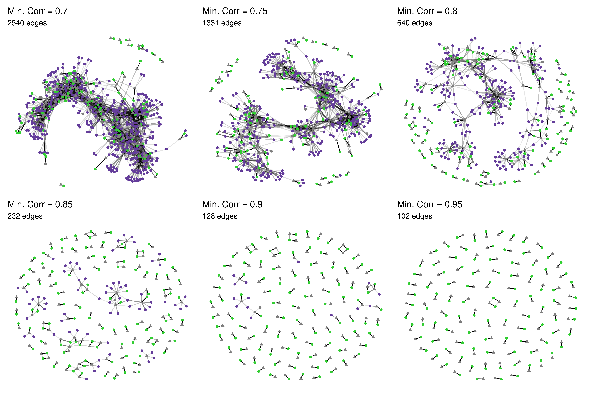
ggsave("test.png", width = 12, height = 8)corrs[5:10] 0.7 0.75 0.8 0.85 0.9 0.95
0.70 0.75 0.80 0.85 0.90 0.95 perc_cyano_res <-
map(corrs, \(x){
cor_mat <-
cor_res %>%
unnest(corr_results) %>%
mutate(cor = ifelse(cor>=x&p<0.01, cor, 0)) %>%
filter(cor > 0) %>%
select(ASV, var2, cor) %>%
left_join(all_asv_ids, by = c("ASV" = "ASV")) %>%
ungroup() %>%
mutate(is_cyano = ifelse(is.na(Phylum), FALSE, Phylum == "p__Cyanobacteriota")) %>%
ungroup() %>%
group_by(var2) %>%
summarize(Perc_Cyano = sum(is_cyano) / n()) %>%
pull(Perc_Cyano)
}) %>%
bind_rows() %>%
pivot_longer(everything(), names_to = "Corr", values_to = "Perc_Cyano")
perc_cyano_res %>%
ggplot(aes(y = Corr, x = Perc_Cyano, fill = stat(x))) +
ggridges::geom_density_ridges_gradient(scale = 4) +
scale_fill_distiller(palette = "PRGn", direction = 1) +
labs(x = "Percent Edges to Cyanos", y = "Minimum Edge Strength") +
theme(legend.position = "none")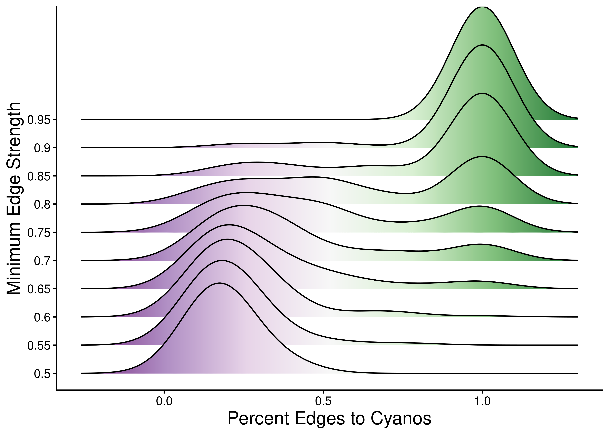
cor_mat <- cor_res %>%
unnest(corr_results) %>%
mutate(cor = ifelse(cor>=0.9&p<0.05, cor, 0)) %>%
select(ASV, var2, cor) %>%
pivot_wider(names_from = var2, values_from = cor) %>%
column_to_rownames("ASV") %>%
as.matrix()
adj_mat <- igraph::graph_from_biadjacency_matrix(cor_mat, weighted=T, directed = FALSE)
abs_melted %>%
group_by(Genus) %>%
summarize(total_ab = sum(Abundance)) %>%
filter(!is.na(Genus)) %>%
slice_max(n = 10, order_by = total_ab)# A tibble: 10 × 2
Genus total_ab
<chr> <dbl>
1 g__Nanopelagicus 75332910
2 g__Fonsibacter 20928719
3 g__Planktophila 13390556
4 g__BACL27 8628032
5 g__Cyanobium_A_31525 8400489
6 g__Pseudanabaena 3923390
7 g__Sediminibacterium 3257441
8 g__UBA961 2982669
9 g__Limnohabitans_A 2932844
10 g__Microcystis 2836943graph <- as_tbl_graph(adj_mat) %>%
left_join(all_asv_ids, by = c("name" = "ASV")) %>%
left_join(all_asv_abunds, by = c("name" = "ASV")) %>%
filter(!is.na(Genus)) %>%
mutate(Centrality = centrality_degree(mode = 'in')) %>%
filter(Centrality > 0)
set.seed(314)
ggraph(graph, layout = "fr")+
geom_edge_fan(aes(alpha = weight), show.legend = FALSE) +
geom_node_point(aes(shape = type, color = ifelse(type, Genus, Phylum), size = Total_Abund)) +
scale_color_manual(values = c(cyano_genus_colors, phylum_colors))set.seed(314)
ggraph(graph, layout = "fr")+
geom_edge_fan(aes(alpha = weight), show.legend = FALSE) +
geom_node_point(aes(shape = type, color = ifelse(type, NA, Phylum), size = Total_Abund)) +
scale_color_manual(values = c(cyano_genus_colors, phylum_colors))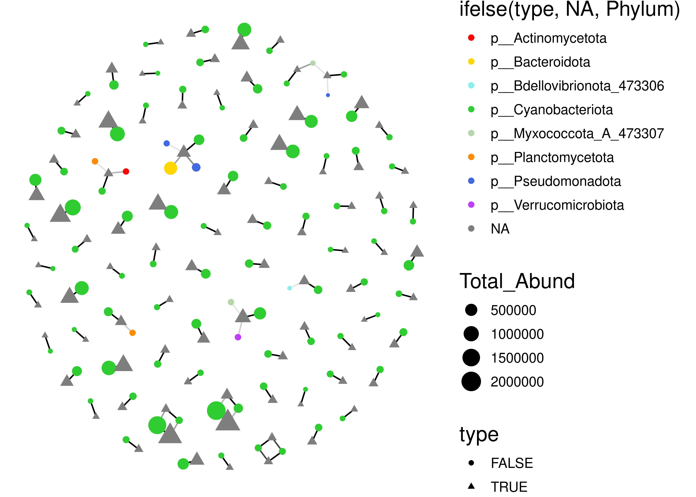
cor_mat <- cor_res %>%
unnest(corr_results) %>%
mutate(cor = ifelse(cor>=0.85&p<0.05, cor, 0)) %>%
select(ASV, var2, cor) %>%
pivot_wider(names_from = var2, values_from = cor) %>%
column_to_rownames("ASV") %>%
as.matrix()
adj_mat <- igraph::graph_from_biadjacency_matrix(cor_mat, weighted=T, directed = FALSE)
all_asv_ids <- abs_physeq %>%
tax_table() %>%
data.frame() %>%
select(ASV, Phylum:Species) %>%
mutate(Genus = str_remove(Genus, "g__"))
all_asv_abunds <-
abs_physeq %>%
psmelt() %>%
filter(Depth_Class == "S", DNA_ID != "KH_D076") %>%
group_by(ASV) %>%
summarize(Total_Abund = sum(Abundance))
abs_melted %>%
group_by(Genus) %>%
summarize(total_ab = sum(Abundance)) %>%
filter(!is.na(Genus)) %>%
slice_max(n = 10, order_by = total_ab)# A tibble: 10 × 2
Genus total_ab
<chr> <dbl>
1 g__Nanopelagicus 75332910
2 g__Fonsibacter 20928719
3 g__Planktophila 13390556
4 g__BACL27 8628032
5 g__Cyanobium_A_31525 8400489
6 g__Pseudanabaena 3923390
7 g__Sediminibacterium 3257441
8 g__UBA961 2982669
9 g__Limnohabitans_A 2932844
10 g__Microcystis 2836943graph <- as_tbl_graph(adj_mat) %>%
left_join(all_asv_ids, by = c("name" = "ASV")) %>%
left_join(all_asv_abunds, by = c("name" = "ASV")) %>%
filter(!is.na(Genus)) %>%
mutate(Centrality = centrality_degree(mode = 'in')) %>%
filter(Centrality > 1)
set.seed(314)
ggraph(graph, layout = "fr")+
geom_edge_fan(aes(alpha = weight), show.legend = FALSE) +
geom_node_point(aes(shape = type, color = ifelse(type, Genus, Phylum), size = Total_Abund)) +
scale_color_manual(values = c(cyano_genus_colors, phylum_colors))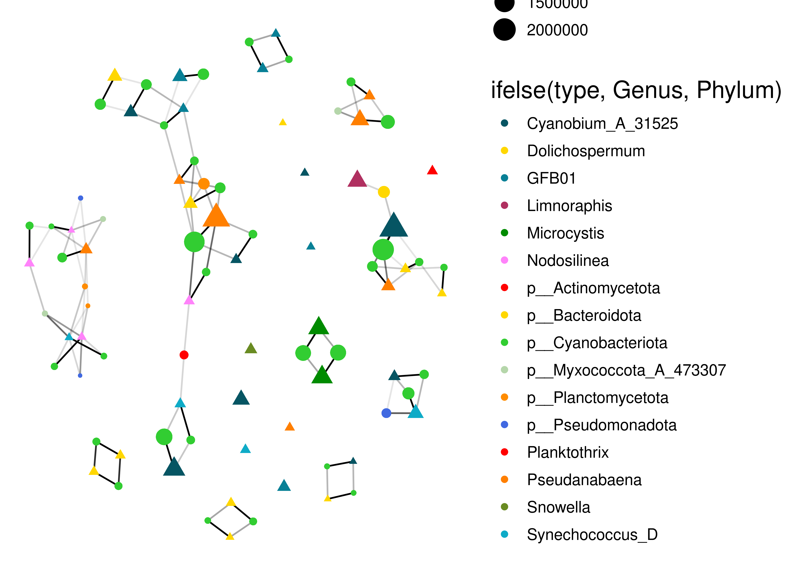
cor_res %>%
unnest(corr_results) %>%
mutate(cor = ifelse(cor>=0.90&p<0.05, cor, 0)) %>%
select(ASV, var2, cor) %>%
filter(cor > 0, ASV != var2) %>%
left_join(all_asv_ids) %>%
left_join(all_asv_ids, by = c("var2" = "ASV")) %>%
left_join(all_asv_abunds, by = c("ASV" = "ASV")) %>%
filter(Phylum.x != "p__Cyanobacteriota") %>% arrange(desc(Total_Abund))# A tibble: 17 × 16
# Groups: ASV [14]
ASV var2 cor Phylum.x Class.x Order.x Family.x Genus.x Species.x
<chr> <chr> <dbl> <chr> <chr> <chr> <chr> <chr> <chr>
1 PROK_52 PROK_110 0.93 p__Bact… c__Bac… o__Chi… f__Chit… Dinghu… <NA>
2 PROK_63 PROK_89 0.91 p__Chlo… c__Ana… o__Cal… f__Cald… <NA> <NA>
3 PROK_63 PROK_203 0.9 p__Chlo… c__Ana… o__Cal… f__Cald… <NA> <NA>
4 PROK_177 PROK_110 0.94 p__Pseu… c__Alp… o__Rho… f__Rhod… Cypion… <NA>
5 PROK_422 PROK_89 0.91 p__Verr… c__Ver… o__Lim… f__SXTU… SXTU01 <NA>
6 PROK_475 PROK_89 0.9 p__Myxo… c__UBA… o__UBA… f__GCA-… REDI01 s__sp007…
7 PROK_545 PROK_371 0.9 p__Plan… c__Pla… o__Pir… f__UBA1… F1-20-… <NA>
8 PROK_893 PROK_341 0.91 p__Plan… c__Pla… o__Pir… f__Pire… Marini… <NA>
9 PROK_630 PROK_371 0.92 p__Acti… c__Act… o__Nan… f__Nano… Nanope… <NA>
10 PROK_630 PROK_469 0.94 p__Acti… c__Act… o__Nan… f__Nano… Nanope… <NA>
11 PROK_543 PROK_1122 0.93 p__Pseu… c__Gam… o__Bur… f__Burk… <NA> <NA>
12 PROK_565 PROK_110 0.9 p__Pseu… c__Gam… o__Bur… f__Burk… Polynu… <NA>
13 PROK_687 PROK_533 0.9 p__Myxo… c__Bra… o__UBA… f__UBA1… SHZC01 s__sp009…
14 PROK_687 PROK_696 0.93 p__Myxo… c__Bra… o__UBA… f__UBA1… SHZC01 s__sp009…
15 PROK_1459 PROK_89 0.92 p__Pate… c__Pac… o__UBA… <NA> <NA> <NA>
16 PROK_1186 PROK_203 0.9 p__Bdel… c__UBA… o__UBA… f__UBA1… GWA1-5… s__sp001…
17 PROK_1944 PROK_533 0.9 p__Pseu… c__Gam… o__Leg… f__Legi… JAALKW… <NA>
# ℹ 7 more variables: Phylum.y <chr>, Class.y <chr>, Order.y <chr>,
# Family.y <chr>, Genus.y <chr>, Species.y <chr>, Total_Abund <dbl>cor_res %>%
unnest(corr_results) %>%
mutate(cor = ifelse(cor > 0.5&p<0.01, cor, 0)) %>%
left_join(all_asv_ids) %>%
left_join(all_asv_ids, by = c("var2" = "ASV")) %>%
left_join(all_asv_abunds, by = c("ASV" = "ASV")) %>%
left_join(all_asv_abunds, by = c("var2" = "ASV")) %>%
rename(Cyano_Abund = Total_Abund.y, Het_Abund = Total_Abund.x) %>%
filter(cor > 0.5) %>%
ggplot(aes(x = Cyano_Abund, y = Het_Abund, size = cor, color = Phylum.x)) +
geom_point(alpha = 0.5) +
scale_x_log10(limits = c(1e5, 1e6)) +
scale_y_log10(limits = c(1e5,5e7)) +
scale_color_manual(values =phylum_colors)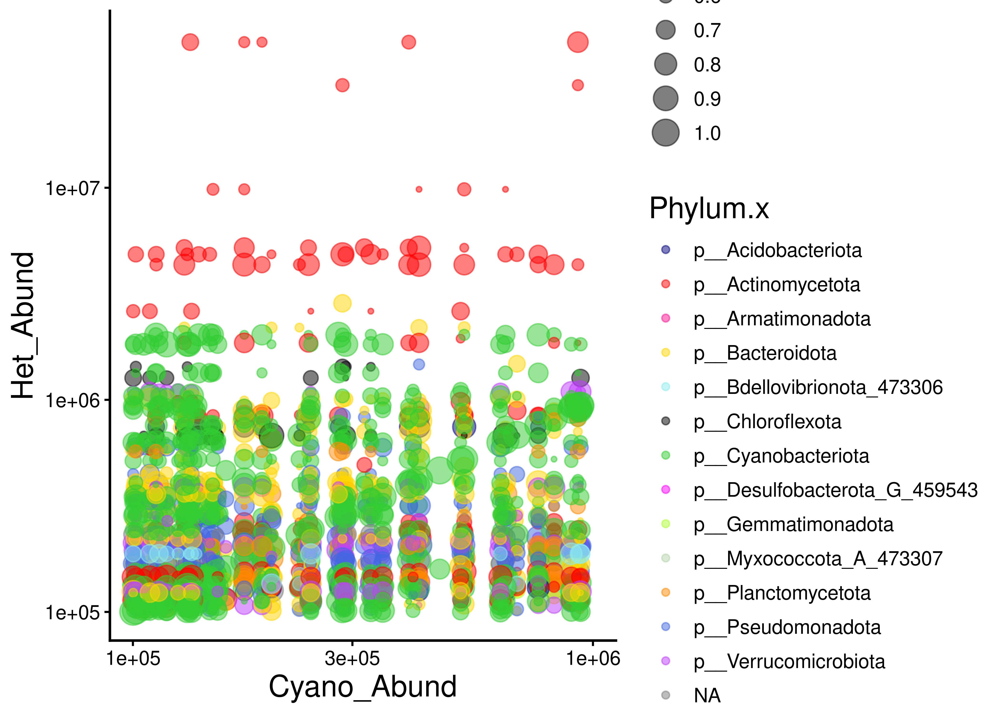
Cyanobacteria are almost exclusively correlated to…other cyanobacteria. Lol!
cor_mat <-
cor_res %>%
unnest(corr_results) %>%
mutate(cor = ifelse(cor>=0.85&p<0.01, cor, 0)) %>%
select(ASV, var2, cor) %>%
pivot_wider(names_from = var2, values_from = cor) %>%
column_to_rownames("ASV") %>%
as.matrix()
adj_mat <- igraph::graph_from_biadjacency_matrix(cor_mat, weighted=T, directed = FALSE)
number_of_het_asvs <- as_tbl_graph(adj_mat) %>%
as_tbl_graph(adj_mat) %>%
left_join(all_asv_ids, by = c("name" = "ASV")) %>%
left_join(all_asv_abunds, by = c("name" = "ASV")) %>%
dplyr::filter(
!((!type)&Phylum == "p__Cyanobacteriota")) %>%
dplyr::filter(Total_Abund > 5e4) %>%
dplyr::filter(!type) %>% pull(name) %>% unique() %>% length()
graph <- as_tbl_graph(adj_mat) %>%
as_tbl_graph(adj_mat) %>%
left_join(all_asv_ids, by = c("name" = "ASV")) %>%
left_join(all_asv_abunds, by = c("name" = "ASV")) %>%
dplyr::filter(
!((!type)&Phylum == "p__Cyanobacteriota")) %>%
dplyr::filter(Total_Abund > 5e4) %>%
mutate(Centrality = centrality_degree(mode = 'out')) %>%
dplyr::filter(Centrality > 0) %>%
mutate(Tax_ID = ifelse(!is.na(Genus), Genus,
ifelse(!is.na(Family), Family,
ifelse(!is.na(Phylum), Phylum, "Unknown"))),
Genus = ifelse(is.na(Genus),"(Rare/Unknown)", Genus)
)
graph %>%
filter(Genus == "Microcystis"|Phylum == "p__Actinomycetota") # A tbl_graph: 11 nodes and 1 edges
#
# An unrooted forest with 10 trees
#
# Node Data: 11 × 11 (active)
type name Phylum Class Order Family Genus Species Total_Abund Centrality
<lgl> <chr> <chr> <chr> <chr> <chr> <chr> <chr> <dbl> <dbl>
1 FALSE PROK_146 p__Ac… c__A… o__N… f__Na… Nano… s__hib… 222869 1
2 FALSE PROK_209 p__Ac… c__A… o__M… f__My… Myco… <NA> 154805 1
3 FALSE PROK_360 p__Ac… c__A… o__N… f__Na… Nano… s__lim… 93063 1
4 FALSE PROK_364 p__Ac… c__A… o__N… f__Na… Nano… <NA> 74598 1
5 FALSE PROK_383 p__Ac… c__A… o__N… f__Na… Nano… <NA> 145994 2
6 FALSE PROK_396 p__Ac… c__A… o__A… f__Mi… (Rar… <NA> 99094 1
7 FALSE PROK_427 p__Ac… c__A… o__N… f__Na… IMCC… s__sp0… 113584 2
8 FALSE PROK_630 p__Ac… c__A… o__N… f__Na… Nano… <NA> 61505 2
9 FALSE PROK_7 p__Ac… c__A… o__N… f__Na… Nano… s__hib… 5212960 1
10 FALSE PROK_9 p__Ac… c__A… o__A… f__Il… BACL… s__sp0… 4339131 1
11 TRUE PROK_79 p__Cy… c__C… o__C… f__Mi… Micr… s__aer… 897292 1
# ℹ 1 more variable: Tax_ID <chr>
#
# Edge Data: 1 × 3
from to weight
<int> <int> <dbl>
1 6 11 0.85abs_melted %>%
filter(ASV == "PROK_396") OTU Sample Abundance Sample_ID DNA_ID input
1 PROK_396 KH_D065 13486 AAM_ERI_20240913_59_FP_ET_1 KH_D065 1141124
2 PROK_396 KH_D078 10364 AAM_ERI_20240913_958_FP_ET_1 KH_D078 1162870
3 PROK_396 KH_D032 8781 AAM_ERI_20240810_59_FP_ET_1 KH_D032 753166
4 PROK_396 KH_D058 8595 AAM_ERI_20240915_22_FP_ET_1 KH_D058 886327
5 PROK_396 KH_D064 8261 AAM_ERI_20240913_58_FP_ET_1 KH_D064 958418
6 PROK_396 KH_D046 5282 AAM_ERI_20240810_964_FP_ET_1 KH_D046 830238
7 PROK_396 KH_D077 4539 AAM_ERI_20240914_951_FP_ET_1 KH_D077 1447403
8 PROK_396 KH_D079 4214 AAM_ERI_20240914_959_FP_ET_1 KH_D079 27310
9 PROK_396 KH_D053 3754 AAM_ERI_20240914_G09_FP_ET_1 KH_D053 898381
10 PROK_396 KH_D067 2997 AAM_ERI_20240913_61_FP_ET_1 KH_D067 1506793
11 PROK_396 KH_D047 2963 AAM_ERI_20240810_966_FP_ET_1 KH_D047 920353
12 PROK_396 KH_D039 2022 AAM_ERI_20240810_91_FP_ET_1 KH_D039 1152387
13 PROK_396 KH_D066 1937 AAM_ERI_20240913_60_FP_ET_1 KH_D066 100755
14 PROK_396 KH_D044 1373 AAM_ERI_20240812_951_FP_ET_1 KH_D044 865770
15 PROK_396 KH_D045 1360 AAM_ERI_20240810_958_FP_ET_1 KH_D045 819384
16 PROK_396 KH_D033 1223 AAM_ERI_20240809_60_FP_ET_1 KH_D033 748707
17 PROK_396 KH_D060 988 AAM_ERI_20240914_38_FP_ET_1 KH_D060 670347
18 PROK_396 KH_D034 895 AAM_ERI_20240809_61_FP_ET_1 KH_D034 773861
19 PROK_396 KH_D054 687 AAM_ERI_20240916_10_FP_ET_1 KH_D054 827718
20 PROK_396 KH_D070 552 AAM_ERI_20240915_78_FP_ET_1 KH_D070 783280
21 PROK_396 KH_D040 525 AAM_ERI_20240813_95_FP_ET_1 KH_D040 518358
22 PROK_396 KH_D041 384 AAM_ERI_20240814_932_FP_ET_1 KH_D041 924883
23 PROK_396 KH_D035 305 AAM_ERI_20240812_73_FP_ET_1 KH_D035 1117026
24 PROK_396 KH_D043 279 AAM_ERI_20240814_937_FP_ET_1 KH_D043 774847
25 PROK_396 KH_D051 241 AAM_ERI_20240916_09_FP_ET_1 KH_D051 803104
26 PROK_396 KH_D042 166 AAM_ERI_20240814_936_FP_ET_1 KH_D042 857888
27 PROK_396 KH_D030 165 AAM_ERI_20240812_43_FP_ET_1 KH_D030 855859
28 PROK_396 KH_D059 165 AAM_ERI_20240915_28_FP_ET_1 KH_D059 948523
29 PROK_396 KH_D075 142 AAM_ERI_20240916_936_FP_ET_1 KH_D075 1546194
30 PROK_396 KH_D063 96 AAM_ERI_20240914_43_FP_BT_1 KH_D063 805429
31 PROK_396 KH_D025 0 AAM_ERI_20240814_15_FP_ET_1 KH_D025 751735
32 PROK_396 KH_D028 0 AAM_ERI_20240812_38_FP_ET_1 KH_D028 789434
33 PROK_396 KH_D056 0 AAM_ERI_20240915_15_FP_ET_1 KH_D056 703368
34 PROK_396 KH_D037 0 AAM_ERI_20240813_78_FP_ET_1 KH_D037 1145100
35 PROK_396 KH_D027 0 AAM_ERI_20240813_28_FP_ET_1 KH_D027 776841
36 PROK_396 KH_D074 0 AAM_ERI_20240916_932_FP_ET_1 KH_D074 1364996
filtered denoisedF denoisedR merged nochim perc_reads_retained Station_ID
1 752618 745964 746217 734131 661182 57.94129 59
2 762317 757884 758109 747195 672242 57.80887 958
3 495997 490076 490094 480124 439695 58.37956 59
4 578738 576737 576668 570658 514448 58.04269 22
5 627481 623996 623925 616853 569666 59.43816 58
6 531962 525188 526217 515530 474316 57.13012 964
7 949068 944288 944158 931169 855144 59.08126 951
8 18180 17183 16989 15239 12179 44.59539 959
9 604394 601740 601944 595112 553502 61.61105 G09
10 980271 973971 973902 958080 875760 58.12079 61
11 605560 601367 601427 592323 540971 58.77864 966
12 752687 748348 747395 736830 662105 57.45509 91
13 65831 59630 58624 45377 30100 29.87445 60
14 580150 578278 578550 571972 536249 61.93897 951
15 528257 521629 522024 512201 468656 57.19614 958
16 477461 473556 473288 464835 414948 55.42195 60
17 439523 437790 437889 433232 387746 57.84258 38
18 501369 495977 496196 487611 434293 56.12029 61
19 537470 535603 535826 528880 478837 57.85026 10
20 517745 515328 515245 510733 451522 57.64503 78
21 342765 341346 341240 337283 314764 60.72328 95
22 609489 607555 607605 600084 564955 61.08394 932
23 740429 738790 738489 730432 689356 61.71351 73
24 506083 500586 500604 489781 458026 59.11180 937
25 532910 531301 531422 525319 471212 58.67385 09
26 569351 566496 566392 560252 524408 61.12779 936
27 576167 574650 574633 570686 538189 62.88290 43
28 630341 628249 628658 621337 576142 60.74096 28
29 1017458 1012842 1012600 994914 895092 57.89002 936
30 529354 527613 527701 522300 476655 59.18026 43
31 493259 490103 490271 484355 454845 60.50603 15
32 517461 516009 516252 511161 477856 60.53147 38
33 463798 462281 462594 457140 410085 58.30305 15
34 765659 762773 762981 753747 699986 61.12881 78
35 514371 512048 512142 506709 476457 61.33263 28
36 906012 903069 902189 885921 789899 57.86823 932
Date Depth Station_Name Water_Surface_Temp_C Latitude Longitude
1 20240913 5 ER 59 21.70 41.72638 -83.150033
2 20240913 5 ECS ER 958n 20.95 41.52537 -81.708483
3 20240810 5 ER 59 24.87 41.72723 -83.150467
4 20240915 5 ECS ER N22n 21.40 42.63333 -80.875533
5 20240913 5 ER 58 21.70 41.68443 -82.933317
6 20240810 5 ECS ER 964n 24.50 41.48383 -82.181217
7 20240914 5 ECS ER 951n 21.40 42.47607 -81.44205
8 20240914 5 ECS ER 959n 22.00 42.18992 -82.186667
9 20240914 5 ECS ER G09n 21.70 41.99442 -82.45015
10 20240913 5 ER 61 21.08 41.94570 -83.045933
11 20240810 5 ECS ER 966n 24.69 41.98432 -82.6265
12 20240810 5 ER 91M 24.58 41.84065 -82.916167
13 20240913 5 ER 60 21.30 41.89052 -83.196533
14 20240812 5 ECS ER 951n 23.47 42.47577 -81.4417
15 20240810 5 ECS ER 958n 24.13 41.52480 -81.707783
16 20240809 5 ER 60 24.52 41.89188 -83.195367
17 20240914 5 ER 38 21.50 42.28197 -81.671867
18 20240809 5 ER 61 24.40 41.94755 -83.043767
19 20240916 5 ER 10 21.20 42.68235 -79.6899
20 20240915 5 ER 78M 20.90 42.11722 -81.250383
21 20240813 5 ECS ER 95B 22.45 42.00025 -80.6666
22 20240814 5 ECS ER 932n 23.08 42.79147 -79.2083
23 20240812 5 ER 73 23.43 41.97665 -81.756867
24 20240814 5 ECS ER 937n NA 42.71455 -80.24575
25 20240916 5 ER 09 21.40 42.53750 -79.617
26 20240814 5 ECS ER 936n 23.73 42.47403 -79.407617
27 20240812 5 ER 43 23.05 41.78883 -81.944867
28 20240915 5 ECS ER I28n 22.00 42.18223 -80.15745
29 20240916 5 ECS ER 936n 20.90 42.47438 -79.407433
30 20240914 5 ER 43 21.50 41.78908 -81.944533
31 20240813 5 ER 15M 23.43 42.51670 -79.893
32 20240812 5 ER 38 23.82 42.28238 -81.6715
33 20240915 5 ER 15M 22.00 42.51678 -79.894217
34 20240813 5 ER 78M 23.08 42.11645 -81.249717
35 20240813 5 ECS ER I28n 23.43 42.18030 -80.160017
36 20240916 5 ECS ER 932n 21.40 42.79183 -79.209517
Month Depth_Class Rep_ID Basin
1 September S September_59_S W
2 September S September_958_S C
3 August S August_59_S W
4 September S September_22_S C
5 September S September_58_S W
6 August S August_964_S C
7 September S September_951_S C
8 September S September_959_S C
9 September S September_G09_S C
10 September S September_61_S W
11 August S August_966_S W
12 August S August_91_S W
13 September S September_60_S W
14 August S August_951_S C
15 August S August_958_S C
16 August S August_60_S W
17 September S September_38_S C
18 August S August_61_S W
19 September S September_10_S E
20 September S September_78_S C
21 August S August_95_S C
22 August S August_932_S E
23 August S August_73_S C
24 August S August_937_S E
25 September S September_09_S E
26 August S August_936_S E
27 August S August_43_S C
28 September S September_28_S C
29 September S September_936_S E
30 September S September_43_S C
31 August S August_15_S E
32 August S August_38_S C
33 September S September_15_S E
34 August S August_78_S C
35 August S August_28_S C
36 September S September_932_S E
Notes
1 Microcystis potentially observed on filter. NA Integrated sample; discrete depths separated by semi-colon NA
2 Note that the date was missing on the tube, so I added it as it was labelled here in the data log. NA Integrated sample; discrete depths separated by semi-colon NA
3 Microcystis observed on filter. Spin column from 178030015_2. NA Integrated sample; discrete depths separated by semi-colon Station pretty turbid! Visible cyanobacterial colonies
4 did vortex step before incubating PW1 at 65C NA Integrated sample; discrete depths separated by semi-colon NA
5 Microcystis potentially observed on filter. NA Integrated sample; discrete depths separated by semi-colon NA
6 NA NA Integrated sample; discrete depths separated by semi-colon NA
7 NA NA <1m of Hypolimnion at 19 m but did not sample ; Integrated sample; discrete depths separated by semi-colon <1m of Hypolimnion at 19 m but did not sample
8 NA NA Integrated sample; discrete depths separated by semi-colon NA
9 Microcystis potentially observed on filter NA B-2 deeper than 10m. Integrated sample; discrete depths separated by semi-colon NA
10 Microcystis potentially observed on filter. Spin column from 178030015_2. NA Integrated sample; discrete depths separated by semi-colon NA
11 Spin column from 178030015_2. NA Integrated sample; discrete depths separated by semi-colon NA
12 Microcystis observed on filter. NA Integrated sample; discrete depths separated by semi-colon NA
13 Microcystis observed on filter. Did vortex step before incubating PW1 at 65C. NA Integrated sample; discrete depths separated by semi-colon NA
14 NA NA Integrated sample; discrete depths separated by semi-colon NA
15 NA NA Integrated sample; discrete depths separated by semi-colon NA
16 Microcystis observed on filter. Note that the date on the tube is August 10th, not August 9th. NA Integrated sample; discrete depths separated by semi-colon 10 INCHES OF DEAD MUSSELS AND THEN 2 INCHES OF MUD AND ON SURFACE BUNDLES OF JUVENILE MUSSELS
17 did vortex step before incubating PW1 at 65C NA Integrated sample; discrete depths separated by semi-colon MULTIPLE DEPTHS
18 Microcystis observed on filter NA Integrated sample; discrete depths separated by semi-colon 6 ponars and zero mussels!
19 Spin column from 178030015_2. NA Integrated sample; discrete depths separated by semi-colon weak thermocline between 9-29 m;MULTIPLE DEPTHS
20 did vortex step before incubating PW1 at 65C NA Integrated sample; discrete depths separated by semi-colon MULTIPLE DEPTHS
21 Microcystis observed on filter. Did vortex step before incubating PW1 at 65C. NA Integrated sample; discrete depths separated by semi-colon NA
22 NA NA Integrated sample; discrete depths separated by semi-colon Not stratified
23 NA NA Integrated sample; discrete depths separated by semi-colon Coleman Lab sampling DCL, Surface, and B-; There were 2 DCLs in the hypolimnion at 22.9m and 21.9m
24 Microcystis potentially observed on filter. NA NOTE Samples were processed hours later because S&M were asleep DO NOT USE FOR RNA; Integrated sample; discrete depths separated by semi-colon Samples were processed hours later because S&M were asleep DO NOT USE FOR RNA;
25 NA NA Integrated sample; discrete depths separated by semi-colon MULTIPLE DEPTHS
26 NA NA Integrated sample; discrete depths separated by semi-colon Drifted quite a bit and the max depth changed between 7-5.5m
27 Spin column from 178030015_2. NA Integrated sample; discrete depths separated by semi-colon NA
28 NA NA Integrated sample; discrete depths separated by semi-colon NA
29 NA NA Integrated sample; discrete depths separated by semi-colon NA
30 NA NA BOTTOM MULTIPLE DEPTHS
31 did vortex step before incubating PW1 at 65C Dates coerced to be consistent with station log - not within names but within the "Date_COllected" columns Integrated sample; discrete depths separated by semi-colon NA
32 did vortex step before incubating PW1 at 65C NA Integrated sample; discrete depths separated by semi-colon NA
33 NA NA Integrated sample; discrete depths separated by semi-colon MULTIPLE DEPTHS
34 NA NA Integrated sample; discrete depths separated by semi-colon; Matching depths for surface sample with GLNPO for nutrients Coleman Lab sampling Surface, mid and B-; DCL just above the thermocline
35 NA NA Integrated sample; discrete depths separated by semi-colon NA
36 NA NA Integrated sample; discrete depths separated by semi-colon NA
Microcystin_Total Anatoxin_Total Toxins_Measured ctd_temperature
1 0.07 0.000 Yes 21.76706
2 0.02 0.003 Yes 21.01095
3 0.29 0.000 Yes 24.88106
4 0.00 0.000 Yes 21.03729
5 0.13 0.000 Yes 21.76932
6 0.03 0.002 Yes 24.55390
7 0.01 0.000 Yes 21.49856
8 0.01 0.007 Yes 22.03487
9 0.07 0.048 Yes 21.71213
10 0.02 0.000 Yes 21.07865
11 0.14 0.000 Yes 24.64542
12 0.07 0.000 Yes 24.59986
13 0.03 0.000 Yes 21.26961
14 0.00 0.003 Yes 23.46413
15 0.00 0.000 Yes 24.26250
16 0.00 0.000 Yes 24.54480
17 0.00 0.000 Yes 21.60689
18 0.08 0.000 Yes 24.41996
19 0.00 0.001 Yes 21.15744
20 0.00 0.000 Yes 20.99053
21 0.00 0.000 Yes 22.59540
22 0.00 0.000 Yes 22.55992
23 0.00 0.000 Yes 23.38103
24 0.00 0.000 Yes 17.01591
25 0.00 0.000 Yes NA
26 0.00 0.000 Yes 23.22488
27 0.00 0.000 Yes 23.12283
28 0.00 0.000 Yes 21.45025
29 0.00 0.000 Yes 20.97419
30 0.00 0.000 Yes 21.45720
31 0.00 0.000 Yes 23.08416
32 0.00 0.000 Yes 23.48470
33 0.00 0.000 Yes NA
34 0.00 0.000 Yes 23.12071
35 0.01 0.000 Yes 23.14125
36 0.00 0.000 Yes 21.49833
ctd_conductivity ctd_par ctd_beamAttenuation ctd_beamTransmission
1 213.8218 204.61308 5.807386 24.0623289
2 265.2812 4999.06166 2.508349 53.4622618
3 299.5597 10.71339 21.276175 0.5192135
4 246.4704 11.12929 2.221714 57.4261107
5 217.6592 2241.76204 4.033780 36.5371409
6 266.1816 672.18233 4.876406 29.5877790
7 243.7879 10.76015 1.957328 61.3044415
8 234.3709 3062.16377 2.426058 54.5288789
9 226.7465 10.71316 2.792377 50.1426831
10 200.7254 11.26564 2.492218 53.6311323
11 225.9424 5609.50333 2.575705 52.5268955
12 226.5207 11.53610 2.703777 51.0588535
13 207.3419 11.23655 2.237212 57.1660901
14 249.7237 10.85789 2.100948 59.1576723
15 273.4826 10.71970 5.967349 22.5073359
16 217.5640 11.40514 1.956504 61.3200868
17 247.4343 49.69991 1.776066 64.1461660
18 219.1096 11.61045 2.440885 54.3239768
19 249.0907 11.61561 1.850479 62.9644068
20 242.8891 10.87000 1.759356 64.4370072
21 255.5142 5552.73318 1.381937 70.8042061
22 261.8185 4448.76219 1.318732 71.9219802
23 252.7909 6333.48815 1.783255 64.0367041
24 232.7842 10.93066 2.767631 50.0755690
25 NA NA NA NA
26 260.7490 9999.00000 1.468273 69.2772034
27 254.3776 6597.52174 1.261317 72.9581436
28 251.8636 9949.78327 1.566905 67.5966716
29 250.3879 1455.59323 1.375360 70.9089432
30 245.6784 8898.87153 1.606970 66.9879675
31 259.5704 11.69799 1.458623 69.4491679
32 254.0188 5895.39756 1.684120 65.6491266
33 NA NA NA NA
34 252.2818 186.51968 1.530098 68.2157445
35 255.7325 6369.22163 1.489919 68.9148467
36 252.8948 11.56709 1.511019 68.5403967
ctd_fluorescence ctd_spar ctd_upoly ctd_oxygen ctd_specificConductance
1 2.0913173 81.984485 0.07951791 8.421316 228.5774
2 2.9285503 1420.575894 0.06551867 7.955647 288.2498
3 1.7856339 0.000000 0.05712378 7.343813 300.2373
4 1.6845158 0.000000 0.04016045 8.865010 267.6613
5 2.1435338 1162.061907 0.06894705 8.963354 232.6680
6 1.6702665 317.954606 0.05764306 6.799601 268.5458
7 1.7164055 0.000000 0.04003408 8.737017 262.1239
8 1.6752179 656.723966 0.04008603 8.553320 249.1178
9 3.0784483 0.000000 0.04309544 8.722851 242.6792
10 1.5192103 0.000000 0.05393191 8.478606 217.7836
11 1.8355160 1955.068566 0.05871910 7.780866 227.5284
12 1.7544312 0.000000 0.05894154 7.552330 228.3202
13 1.2610504 0.000000 0.07746667 8.518869 224.0337
14 2.4184223 0.000000 0.05925677 8.279414 257.6102
15 1.9594264 0.000000 0.05856798 7.003213 277.5437
16 2.3408208 0.000000 0.05881830 8.003406 219.5363
17 1.8451412 3.754195 0.04002339 8.262882 265.4186
18 1.7472639 0.000000 0.05826809 7.832125 221.6545
19 2.0401674 0.000000 0.04009123 9.269260 269.7981
20 1.7339410 0.000000 0.04008772 8.053137 264.0353
21 1.5351549 2093.708493 0.03929049 8.469209 268.3940
22 1.0792054 1717.327619 0.05926243 8.160550 275.2219
23 1.6927030 2069.661185 0.05917638 8.370730 261.2207
24 1.4028519 0.000000 0.05925233 8.278006 277.0366
25 NA NA NA NA NA
26 0.7428225 2089.986525 0.05746960 8.210479 270.3154
27 1.4588875 1567.022181 0.05790953 7.959450 264.2699
28 1.0123609 1577.897907 0.04000761 8.723122 271.0805
29 0.9303701 105.761059 0.04016987 8.006987 272.2837
30 1.2211717 1569.156714 0.03997219 8.019331 264.3844
31 1.4322630 0.000000 0.05921820 8.389546 269.8815
32 1.7098973 1477.774290 0.05772806 8.389208 261.9288
33 NA NA NA NA NA
34 1.6199505 24.810521 0.05785300 8.274415 262.1036
35 1.2383134 1979.966666 0.05914740 8.272523 265.5758
36 1.3807382 0.000000 0.04013637 8.763377 271.9094
ctd_salinity nh4_ug_n_l n_ox_ug_n_l srp_ug_p_l tn_ug_n_l tp_ug_p_l k_mg_l
1 1025579.6 11.310 167.5000 0.4000000 392.5000 21.500000 1.108000
2 1862980.4 21.200 105.0000 0.4000000 412.0000 16.000000 1.551000
3 2050998.3 NA 467.0000 0.9303333 991.3333 46.750000 2.063333
4 1540165.8 6.150 0.8800 0.4000000 277.0000 15.600000 1.271000
5 1073393.4 21.500 102.6500 0.4000000 391.5000 19.500000 1.135500
6 1541952.4 NA 110.0000 1.0900000 444.0000 27.250000 NaN
7 1458584.3 25.700 3.2900 0.4000000 280.0000 17.500000 1.251000
8 1278662.4 9.985 3.4050 0.4000000 325.5000 21.750000 1.245000
9 1196194.9 14.900 26.2000 0.4000000 375.0000 19.400000 1.218000
10 906694.2 12.700 194.0000 0.4000000 376.0000 8.630000 0.991000
11 1007384.7 NA 181.0000 0.2500000 583.0000 9.850000 NaN
12 1016649.4 NA 297.0000 0.2500000 540.6667 8.716667 1.280000
13 974807.1 51.300 260.5000 0.4000000 450.5000 11.350000 1.102000
14 1389556.3 NA 38.7000 0.2500000 310.0000 8.400000 NaN
15 1679188.5 NA 86.9000 0.6060000 370.0000 20.050000 NaN
16 919316.7 NA 262.0000 0.2500000 462.3333 6.966667 1.200000
17 1505795.7 6.700 0.8800 0.4000000 242.0000 17.500000 1.312000
18 942485.2 NA 368.3333 0.2500000 631.6667 7.700000 1.275000
19 1571574.2 13.000 24.8000 0.4000000 264.0000 9.870000 NaN
20 1487271.6 12.100 2.0300 0.4000000 276.0000 17.100000 1.352000
21 1546603.3 NA 14.2000 0.2500000 294.0000 5.400000 NaN
22 1649694.5 NA 103.0000 0.2500000 365.0000 4.450000 NaN
23 1440300.6 NA 16.4500 0.2500000 290.5000 8.150000 1.420000
24 1687474.8 NA 117.0000 0.5640000 365.0000 9.200000 NaN
25 NA 16.100 39.2000 0.4000000 288.0000 7.350000 1.254000
26 1573049.9 NA 52.3000 0.2500000 286.0000 5.100000 NaN
27 1484676.2 NA 1.3000 0.2500000 250.0000 7.125000 1.420000
28 1590063.6 9.840 17.5500 0.4000000 248.5000 8.785000 1.296000
29 1609544.2 25.200 45.8500 0.4000000 263.0000 8.170000 1.354500
30 1491168.8 10.900 0.8800 0.4000000 248.0000 18.600000 1.243000
31 1567114.9 NA 24.5000 0.2500000 252.0000 4.800000 1.470000
32 1450014.5 NA 1.4000 0.2500000 252.0000 7.175000 1.460000
33 NA 7.270 33.8000 0.4000000 265.0000 7.680000 1.333000
34 1453729.1 NA 3.9000 0.4135000 259.0000 6.200000 1.410000
35 1503513.4 NA 12.3000 0.2500000 246.0000 5.800000 NaN
36 1602443.4 14.800 29.3000 0.4000000 266.0000 8.620000 1.290000
na_mg_l ca_mg_l mg_mg_l cl_mg_l so4_mg_l doc_mg_c_l si_mg_si_o2_l
1 5.71000 26.11000 8.01100 10.90685 16.29775 2.4130 2.1985341
2 11.66800 31.12000 8.66400 19.84830 20.36600 2.6750 1.0499830
3 12.23333 33.16667 10.93333 19.90000 NA NA 1.2513333
4 7.42600 30.54000 8.49800 15.40620 19.22090 2.4420 1.9295425
5 6.61000 26.13000 8.05100 11.79925 17.06510 2.4630 2.1833492
6 NaN NaN NaN 16.90000 NA NA 0.8830000
7 8.28800 29.18000 8.34000 16.09610 20.26400 2.4800 1.4854930
8 7.66100 28.36000 8.40700 14.14340 18.33795 2.5275 1.7544846
9 6.61600 27.36000 8.24800 13.20390 17.45170 2.4050 1.9551608
10 4.83000 25.17000 7.67700 9.16325 15.94380 2.3410 1.7050154
11 NaN NaN NaN 10.90000 NA NA 1.0660000
12 6.55500 27.30000 8.63000 10.90000 NA NA 0.9720000
13 5.48700 25.80000 7.74300 10.50305 16.78060 2.3285 1.6733601
14 NaN NaN NaN 14.60000 NA NA 0.4860000
15 NaN NaN NaN 18.20000 NA NA 0.7380000
16 6.24500 26.45000 8.31500 10.03333 NA NA 0.8910000
17 7.71600 29.98000 8.49800 15.14840 18.77690 2.3760 0.9816677
18 6.17000 26.50000 8.33000 10.23333 NA NA 0.9520000
19 NaN NaN NaN 16.28110 19.83470 2.5030 0.6396616
20 7.92800 30.28000 8.47400 15.51450 19.48180 2.4400 1.2838684
21 NaN NaN NaN 15.60000 NA NA 0.3940000
22 NaN NaN NaN 16.60000 NA NA 0.2170000
23 8.95000 31.20000 8.91000 15.25000 NA NA 0.1915000
24 NaN NaN NaN 16.70000 NA NA 0.4070000
25 8.75400 30.60000 8.48400 16.02590 19.48700 2.4920 0.5017526
26 NaN NaN NaN 16.00000 NA NA 0.1750000
27 8.91000 32.20000 8.97000 14.95000 NA NA 0.1820000
28 8.70700 31.11000 8.55100 16.23250 19.69095 2.4775 0.5484802
29 8.98900 30.77000 8.44000 17.36855 21.00445 2.9535 0.4720313
30 7.44000 29.44000 8.36200 14.91040 18.57820 2.4090 0.9389706
31 9.54000 32.70000 9.03000 16.05000 NA NA 0.1215000
32 9.22000 32.10000 9.14000 15.10000 NA NA 0.1330000
33 9.00400 31.22000 8.41200 16.71160 20.07160 2.4740 0.3158493
34 8.75000 32.10000 8.95000 14.75000 NA NA 0.2660000
35 NaN NaN NaN 15.30000 NA NA 0.2770000
36 8.08600 30.82000 8.54400 16.83500 20.26910 2.6220 0.3901809
chl_a_ug_l po_p_ug_p_l po_n_ug_n_l pH np_ratio avg_cells_per_ml
1 8.520000 440.0 1880.000 NA 40.42359 5990120
2 7.200000 483.0 2200.000 NA 57.01786 5889550
3 14.636333 NA NA 8.506667 46.95391 13868770
4 6.360000 317.0 1850.000 NA 39.31777 8851427
5 7.240000 407.5 2095.000 NA 44.45604 6394342
6 5.999000 NA NA 8.020000 36.07864 6846654
7 5.880000 255.0 1600.000 NA 35.42857 7660713
8 5.840000 445.0 2920.000 NA 33.13793 7164395
9 7.920000 327.0 2710.000 NA 42.80191 6857272
10 3.880000 256.0 1085.000 NA 96.47409 2792541
11 6.483000 NA NA 8.490000 131.05874 8253721
12 5.303000 NA NA 8.483333 137.34499 4970325
13 3.567368 275.5 943.500 NA 87.88861 2124998
14 7.255000 NA NA 8.250000 81.71769 8994778
15 5.991000 NA NA 8.260000 40.86213 6103045
16 8.525000 NA NA 8.563333 146.94805 3034676
17 5.800000 283.0 1560.000 NA 30.62041 7737392
18 5.080667 NA NA 8.556667 181.64811 2770640
19 5.040000 196.0 1430.000 NA 59.22710 5963676
20 7.840000 295.0 1700.000 NA 35.73935 5608259
21 4.907000 NA NA 8.350000 120.55556 5596721
22 2.589000 NA NA 8.290000 181.62119 4629713
23 7.265500 NA NA 8.555000 78.92638 8643343
24 3.472000 NA NA 8.110000 87.84938 4039972
25 4.560000 177.0 1180.000 NA 86.76385 5597844
26 2.527000 NA NA 8.480000 124.17367 5301442
27 5.260500 NA NA 8.510000 77.69424 8765457
28 4.240000 145.5 1156.824 NA 62.63517 5475781
29 2.420000 126.5 598.500 NA 71.27994 4802776
30 5.440000 247.0 1370.000 NA 29.52381 5622961
31 3.998000 NA NA 8.535000 116.25000 4184957
32 5.896500 NA NA 8.600000 77.77003 7008179
33 4.840000 165.0 1320.000 NA 76.40439 5798168
34 5.779000 NA NA 8.545000 92.50000 6925579
35 3.400000 NA NA 8.610000 93.91626 6932419
36 3.280000 156.0 1190.000 NA 68.32947 5187037
rsg_total_per_ml rsg_pos_per_ml rsg_perc_pos het_rsg_per_ml het_rsg_perc_pos
1 5137385 2779507 0.5410354 2574152 0.6638939
2 6414936 2926173 0.4563556 2850693 0.4848271
3 NaN NaN NaN NaN NaN
4 4693527 3490707 0.7501330 3267239 0.8090358
5 6437679 2985247 0.4656643 2824046 0.5140857
6 NaN NaN NaN NaN NaN
7 5701473 3247034 0.5695413 3030392 0.6066200
8 7040178 4108259 0.5856151 3967869 0.6129421
9 4883334 4111067 0.8509425 3969135 0.9195166
10 2331601 1900223 0.8116524 1788902 0.9384136
11 NaN NaN NaN NaN NaN
12 NaN NaN NaN NaN NaN
13 1760606 1259273 0.7157689 1214238 0.8269557
14 NaN NaN NaN NaN NaN
15 NaN NaN NaN NaN NaN
16 NaN NaN NaN NaN NaN
17 4448911 2415648 0.5482480 2186399 0.5702295
18 NaN NaN NaN NaN NaN
19 4022293 2894847 0.7244351 2772625 0.7865617
20 4340473 2796078 0.6442420 2706834 0.6993589
21 NaN NaN NaN NaN NaN
22 NaN NaN NaN NaN NaN
23 NaN NaN NaN NaN NaN
24 NaN NaN NaN NaN NaN
25 3601684 2768936 0.7730179 2652440 0.8490471
26 NaN NaN NaN NaN NaN
27 NaN NaN NaN NaN NaN
28 4585819 2690923 0.6010608 2576189 0.6391846
29 4351873 1821880 0.4217997 1766935 0.4397736
30 4948139 3106423 0.6449977 3016463 0.6735955
31 NaN NaN NaN NaN NaN
32 NaN NaN NaN NaN NaN
33 4090747 2885983 0.7074279 2753356 0.7751650
34 NaN NaN NaN NaN NaN
35 NaN NaN NaN NaN NaN
36 5017548 2555543 0.5094982 2425613 0.5320766
rsg_mfi pig_counts_chl_big pig_counts_chl_small pig_counts_high_chl_high_pe
1 1590.000 19779.760 107113.67 66222.82
2 1732.250 8401.727 68411.68 48668.62
3 NaN 53403.350 127887.76 65228.50
4 1974.125 9629.620 213006.13 186019.17
5 1593.750 18321.637 145451.97 113313.20
6 NaN 22088.733 72532.46 58198.14
7 2037.500 8361.687 200380.18 175792.28
8 1634.125 11474.797 131731.60 90984.23
9 1598.250 12482.470 128178.05 86770.02
10 2048.375 8368.360 59559.50 32665.97
11 NaN 12866.187 250623.71 162969.47
12 NaN 7447.440 148728.58 72038.63
13 2107.750 10050.040 30390.36 20694.01
14 NaN 7280.607 286326.04 267747.48
15 NaN 12385.707 72906.17 62475.75
16 NaN 11638.293 89182.43 36810.11
17 1880.375 6229.557 187287.10 165024.86
18 NaN 10744.067 70470.40 27620.93
19 1685.500 5438.767 118945.49 110390.28
20 1861.375 3259.923 86262.84 71084.35
21 NaN 7874.533 128668.54 126286.16
22 NaN 6332.993 139472.67 132465.67
23 NaN 9516.173 233239.67 221441.22
24 NaN 5605.600 93733.64 82001.92
25 1739.750 4154.150 115785.67 108021.25
26 NaN 4477.807 98898.80 98698.60
27 NaN 6159.487 196803.27 191898.37
28 1862.250 5532.193 106189.42 102268.83
29 1568.500 2866.197 56029.31 51044.33
30 1847.500 4204.200 78551.81 71651.58
31 NaN 6026.020 141921.78 138064.59
32 NaN 9716.373 222041.82 210216.67
33 1729.250 6383.043 135638.84 131478.01
34 NaN 9009.000 268121.19 252919.33
35 NaN 12499.153 126946.82 140026.55
36 1623.250 5458.787 161631.47 159903.08
pig_counts_high_chl_no_pe pig_counts_low_chl_no_pe pig_counts_no_chl_low_pe
1 5595.590 79676.263 3703.700
2 7384.043 33289.923 7257.250
3 18615.263 150854.037 11451.440
4 7741.067 51244.527 7347.340
5 8154.813 75295.220 107107.000
6 9069.060 44357.647 10503.827
7 6423.083 46339.627 12022.010
8 10116.773 58058.000 7524.183
9 10790.780 57737.680 7504.163
10 6002.663 40073.367 5195.190
11 12579.233 123803.680 55909.187
12 12205.527 90463.707 6773.433
13 4748.077 22899.543 14744.730
14 7347.340 47827.780 137283.813
15 5305.300 32465.767 14187.507
16 11424.747 68294.893 7434.093
17 5849.177 45588.877 8431.757
18 9703.027 55522.133 7887.880
19 5118.447 21301.280 7847.840
20 6526.520 19329.310 7557.550
21 5472.133 16436.420 13913.900
22 5618.947 16603.253 6299.627
23 6072.733 31431.400 8862.187
24 5505.500 19693.007 8715.373
25 4354.350 17297.280 6389.717
26 3737.067 6673.333 8481.807
27 5158.487 19866.513 107754.313
28 4280.943 11731.720 6162.823
29 2679.343 9953.277 3463.460
30 3760.423 14674.660 6553.213
31 5165.160 15355.340 10530.520
32 9242.567 24964.940 10764.087
33 5949.277 14954.940 7580.907
34 7841.167 31271.240 10450.440
35 5291.953 11137.793 358384.693
36 5525.520 15041.693 5809.137
total_chl_counts Richness Shannon Simpson Kingdom Phylum
1 126893.43 818.82 91.78104 23.511612 d__Bacteria p__Actinomycetota
2 76813.40 866.45 70.54887 13.831345 d__Bacteria p__Actinomycetota
3 181291.11 1142.27 154.35581 31.600931 d__Bacteria p__Actinomycetota
4 222635.75 747.17 87.55574 20.282831 d__Bacteria p__Actinomycetota
5 163773.61 717.27 79.97052 19.298360 d__Bacteria p__Actinomycetota
6 94621.19 1242.55 146.83169 27.192791 d__Bacteria p__Actinomycetota
7 208741.87 1003.99 109.86586 19.300189 d__Bacteria p__Actinomycetota
8 143206.40 220.00 42.36131 12.087040 d__Bacteria p__Actinomycetota
9 140660.52 777.07 66.24358 13.569881 d__Bacteria p__Actinomycetota
10 67927.86 709.64 68.15254 17.672418 d__Bacteria p__Actinomycetota
11 263489.89 616.59 46.63318 12.003958 d__Bacteria p__Actinomycetota
12 156176.02 649.99 52.39285 13.065259 d__Bacteria p__Actinomycetota
13 40440.40 205.15 18.92116 5.847497 d__Bacteria p__Actinomycetota
14 293606.65 573.28 41.91412 10.376392 d__Bacteria p__Actinomycetota
15 85291.87 1036.85 125.43324 27.508395 d__Bacteria p__Actinomycetota
16 100820.72 753.19 80.83279 15.803926 d__Bacteria p__Actinomycetota
17 193516.66 695.48 78.18681 19.041189 d__Bacteria p__Actinomycetota
18 81214.47 870.59 118.85802 24.061906 d__Bacteria p__Actinomycetota
19 124384.26 588.88 41.97127 10.276476 d__Bacteria p__Actinomycetota
20 89522.77 829.90 121.79970 28.196621 d__Bacteria p__Actinomycetota
21 136543.07 501.32 44.10207 12.418854 d__Bacteria p__Actinomycetota
22 145805.66 443.90 32.63899 9.499155 d__Bacteria p__Actinomycetota
23 242755.85 517.78 49.18037 13.256160 d__Bacteria p__Actinomycetota
24 99339.24 1035.05 86.29731 16.019705 d__Bacteria p__Actinomycetota
25 119939.82 604.23 53.42097 14.381598 d__Bacteria p__Actinomycetota
26 103376.61 495.71 34.30781 9.119510 d__Bacteria p__Actinomycetota
27 202962.76 443.41 30.69998 8.987840 d__Bacteria p__Actinomycetota
28 111721.61 529.15 33.45398 9.072467 d__Bacteria p__Actinomycetota
29 58895.50 499.54 37.90243 10.645062 d__Bacteria p__Actinomycetota
30 82756.01 631.24 56.38208 13.236912 d__Bacteria p__Actinomycetota
31 147947.80 556.39 61.53370 19.553234 d__Bacteria p__Actinomycetota
32 231758.19 482.19 46.51723 11.958806 d__Bacteria p__Actinomycetota
33 142021.88 460.08 36.41357 10.798683 d__Bacteria p__Actinomycetota
34 277130.19 551.72 52.99041 13.784362 d__Bacteria p__Actinomycetota
35 139445.97 426.14 29.80433 8.943186 d__Bacteria p__Actinomycetota
36 167090.26 504.55 38.80654 10.977010 d__Bacteria p__Actinomycetota
Class Order Family Genus Species
1 c__Actinomycetes o__Actinomycetales f__Microbacteriaceae <NA> <NA>
2 c__Actinomycetes o__Actinomycetales f__Microbacteriaceae <NA> <NA>
3 c__Actinomycetes o__Actinomycetales f__Microbacteriaceae <NA> <NA>
4 c__Actinomycetes o__Actinomycetales f__Microbacteriaceae <NA> <NA>
5 c__Actinomycetes o__Actinomycetales f__Microbacteriaceae <NA> <NA>
6 c__Actinomycetes o__Actinomycetales f__Microbacteriaceae <NA> <NA>
7 c__Actinomycetes o__Actinomycetales f__Microbacteriaceae <NA> <NA>
8 c__Actinomycetes o__Actinomycetales f__Microbacteriaceae <NA> <NA>
9 c__Actinomycetes o__Actinomycetales f__Microbacteriaceae <NA> <NA>
10 c__Actinomycetes o__Actinomycetales f__Microbacteriaceae <NA> <NA>
11 c__Actinomycetes o__Actinomycetales f__Microbacteriaceae <NA> <NA>
12 c__Actinomycetes o__Actinomycetales f__Microbacteriaceae <NA> <NA>
13 c__Actinomycetes o__Actinomycetales f__Microbacteriaceae <NA> <NA>
14 c__Actinomycetes o__Actinomycetales f__Microbacteriaceae <NA> <NA>
15 c__Actinomycetes o__Actinomycetales f__Microbacteriaceae <NA> <NA>
16 c__Actinomycetes o__Actinomycetales f__Microbacteriaceae <NA> <NA>
17 c__Actinomycetes o__Actinomycetales f__Microbacteriaceae <NA> <NA>
18 c__Actinomycetes o__Actinomycetales f__Microbacteriaceae <NA> <NA>
19 c__Actinomycetes o__Actinomycetales f__Microbacteriaceae <NA> <NA>
20 c__Actinomycetes o__Actinomycetales f__Microbacteriaceae <NA> <NA>
21 c__Actinomycetes o__Actinomycetales f__Microbacteriaceae <NA> <NA>
22 c__Actinomycetes o__Actinomycetales f__Microbacteriaceae <NA> <NA>
23 c__Actinomycetes o__Actinomycetales f__Microbacteriaceae <NA> <NA>
24 c__Actinomycetes o__Actinomycetales f__Microbacteriaceae <NA> <NA>
25 c__Actinomycetes o__Actinomycetales f__Microbacteriaceae <NA> <NA>
26 c__Actinomycetes o__Actinomycetales f__Microbacteriaceae <NA> <NA>
27 c__Actinomycetes o__Actinomycetales f__Microbacteriaceae <NA> <NA>
28 c__Actinomycetes o__Actinomycetales f__Microbacteriaceae <NA> <NA>
29 c__Actinomycetes o__Actinomycetales f__Microbacteriaceae <NA> <NA>
30 c__Actinomycetes o__Actinomycetales f__Microbacteriaceae <NA> <NA>
31 c__Actinomycetes o__Actinomycetales f__Microbacteriaceae <NA> <NA>
32 c__Actinomycetes o__Actinomycetales f__Microbacteriaceae <NA> <NA>
33 c__Actinomycetes o__Actinomycetales f__Microbacteriaceae <NA> <NA>
34 c__Actinomycetes o__Actinomycetales f__Microbacteriaceae <NA> <NA>
35 c__Actinomycetes o__Actinomycetales f__Microbacteriaceae <NA> <NA>
36 c__Actinomycetes o__Actinomycetales f__Microbacteriaceae <NA> <NA>
ASV
1 PROK_396
2 PROK_396
3 PROK_396
4 PROK_396
5 PROK_396
6 PROK_396
7 PROK_396
8 PROK_396
9 PROK_396
10 PROK_396
11 PROK_396
12 PROK_396
13 PROK_396
14 PROK_396
15 PROK_396
16 PROK_396
17 PROK_396
18 PROK_396
19 PROK_396
20 PROK_396
21 PROK_396
22 PROK_396
23 PROK_396
24 PROK_396
25 PROK_396
26 PROK_396
27 PROK_396
28 PROK_396
29 PROK_396
30 PROK_396
31 PROK_396
32 PROK_396
33 PROK_396
34 PROK_396
35 PROK_396
36 PROK_396
ASVseqs
1 TACGTAGGGTGCAAGCGTTATCCGGAATTATTGGGCGTAAAGAGCTCGTAGGCGGTTTGTCGCGTCTGCTGTGAAAATCTGAGGCTCAACCTCGGACTTGCAGTGGGTACGGGCAGACTAGAGTGCGGTAGGGGAGAAGGGAATTCCTGGTGTAGCGGTGGAATGCGCAGATATCAGGAGGAACACCAATGGCGAAGGCACTTCTCTGGGCCGTAACTGACGCTGAGGAGCGAAAGCGTGGGGAGCGAACAGGATTAGATACCCTGGTAGTCCACGCCGTAAACGTTGGGCGCTAGATGTGGGTCACATTCCACGTGATCCGTGTCGCAGCTAACGCATTAAGCGCCCCGCCTGGGGAGTACGGCCGCAAGGCTA
2 TACGTAGGGTGCAAGCGTTATCCGGAATTATTGGGCGTAAAGAGCTCGTAGGCGGTTTGTCGCGTCTGCTGTGAAAATCTGAGGCTCAACCTCGGACTTGCAGTGGGTACGGGCAGACTAGAGTGCGGTAGGGGAGAAGGGAATTCCTGGTGTAGCGGTGGAATGCGCAGATATCAGGAGGAACACCAATGGCGAAGGCACTTCTCTGGGCCGTAACTGACGCTGAGGAGCGAAAGCGTGGGGAGCGAACAGGATTAGATACCCTGGTAGTCCACGCCGTAAACGTTGGGCGCTAGATGTGGGTCACATTCCACGTGATCCGTGTCGCAGCTAACGCATTAAGCGCCCCGCCTGGGGAGTACGGCCGCAAGGCTA
3 TACGTAGGGTGCAAGCGTTATCCGGAATTATTGGGCGTAAAGAGCTCGTAGGCGGTTTGTCGCGTCTGCTGTGAAAATCTGAGGCTCAACCTCGGACTTGCAGTGGGTACGGGCAGACTAGAGTGCGGTAGGGGAGAAGGGAATTCCTGGTGTAGCGGTGGAATGCGCAGATATCAGGAGGAACACCAATGGCGAAGGCACTTCTCTGGGCCGTAACTGACGCTGAGGAGCGAAAGCGTGGGGAGCGAACAGGATTAGATACCCTGGTAGTCCACGCCGTAAACGTTGGGCGCTAGATGTGGGTCACATTCCACGTGATCCGTGTCGCAGCTAACGCATTAAGCGCCCCGCCTGGGGAGTACGGCCGCAAGGCTA
4 TACGTAGGGTGCAAGCGTTATCCGGAATTATTGGGCGTAAAGAGCTCGTAGGCGGTTTGTCGCGTCTGCTGTGAAAATCTGAGGCTCAACCTCGGACTTGCAGTGGGTACGGGCAGACTAGAGTGCGGTAGGGGAGAAGGGAATTCCTGGTGTAGCGGTGGAATGCGCAGATATCAGGAGGAACACCAATGGCGAAGGCACTTCTCTGGGCCGTAACTGACGCTGAGGAGCGAAAGCGTGGGGAGCGAACAGGATTAGATACCCTGGTAGTCCACGCCGTAAACGTTGGGCGCTAGATGTGGGTCACATTCCACGTGATCCGTGTCGCAGCTAACGCATTAAGCGCCCCGCCTGGGGAGTACGGCCGCAAGGCTA
5 TACGTAGGGTGCAAGCGTTATCCGGAATTATTGGGCGTAAAGAGCTCGTAGGCGGTTTGTCGCGTCTGCTGTGAAAATCTGAGGCTCAACCTCGGACTTGCAGTGGGTACGGGCAGACTAGAGTGCGGTAGGGGAGAAGGGAATTCCTGGTGTAGCGGTGGAATGCGCAGATATCAGGAGGAACACCAATGGCGAAGGCACTTCTCTGGGCCGTAACTGACGCTGAGGAGCGAAAGCGTGGGGAGCGAACAGGATTAGATACCCTGGTAGTCCACGCCGTAAACGTTGGGCGCTAGATGTGGGTCACATTCCACGTGATCCGTGTCGCAGCTAACGCATTAAGCGCCCCGCCTGGGGAGTACGGCCGCAAGGCTA
6 TACGTAGGGTGCAAGCGTTATCCGGAATTATTGGGCGTAAAGAGCTCGTAGGCGGTTTGTCGCGTCTGCTGTGAAAATCTGAGGCTCAACCTCGGACTTGCAGTGGGTACGGGCAGACTAGAGTGCGGTAGGGGAGAAGGGAATTCCTGGTGTAGCGGTGGAATGCGCAGATATCAGGAGGAACACCAATGGCGAAGGCACTTCTCTGGGCCGTAACTGACGCTGAGGAGCGAAAGCGTGGGGAGCGAACAGGATTAGATACCCTGGTAGTCCACGCCGTAAACGTTGGGCGCTAGATGTGGGTCACATTCCACGTGATCCGTGTCGCAGCTAACGCATTAAGCGCCCCGCCTGGGGAGTACGGCCGCAAGGCTA
7 TACGTAGGGTGCAAGCGTTATCCGGAATTATTGGGCGTAAAGAGCTCGTAGGCGGTTTGTCGCGTCTGCTGTGAAAATCTGAGGCTCAACCTCGGACTTGCAGTGGGTACGGGCAGACTAGAGTGCGGTAGGGGAGAAGGGAATTCCTGGTGTAGCGGTGGAATGCGCAGATATCAGGAGGAACACCAATGGCGAAGGCACTTCTCTGGGCCGTAACTGACGCTGAGGAGCGAAAGCGTGGGGAGCGAACAGGATTAGATACCCTGGTAGTCCACGCCGTAAACGTTGGGCGCTAGATGTGGGTCACATTCCACGTGATCCGTGTCGCAGCTAACGCATTAAGCGCCCCGCCTGGGGAGTACGGCCGCAAGGCTA
8 TACGTAGGGTGCAAGCGTTATCCGGAATTATTGGGCGTAAAGAGCTCGTAGGCGGTTTGTCGCGTCTGCTGTGAAAATCTGAGGCTCAACCTCGGACTTGCAGTGGGTACGGGCAGACTAGAGTGCGGTAGGGGAGAAGGGAATTCCTGGTGTAGCGGTGGAATGCGCAGATATCAGGAGGAACACCAATGGCGAAGGCACTTCTCTGGGCCGTAACTGACGCTGAGGAGCGAAAGCGTGGGGAGCGAACAGGATTAGATACCCTGGTAGTCCACGCCGTAAACGTTGGGCGCTAGATGTGGGTCACATTCCACGTGATCCGTGTCGCAGCTAACGCATTAAGCGCCCCGCCTGGGGAGTACGGCCGCAAGGCTA
9 TACGTAGGGTGCAAGCGTTATCCGGAATTATTGGGCGTAAAGAGCTCGTAGGCGGTTTGTCGCGTCTGCTGTGAAAATCTGAGGCTCAACCTCGGACTTGCAGTGGGTACGGGCAGACTAGAGTGCGGTAGGGGAGAAGGGAATTCCTGGTGTAGCGGTGGAATGCGCAGATATCAGGAGGAACACCAATGGCGAAGGCACTTCTCTGGGCCGTAACTGACGCTGAGGAGCGAAAGCGTGGGGAGCGAACAGGATTAGATACCCTGGTAGTCCACGCCGTAAACGTTGGGCGCTAGATGTGGGTCACATTCCACGTGATCCGTGTCGCAGCTAACGCATTAAGCGCCCCGCCTGGGGAGTACGGCCGCAAGGCTA
10 TACGTAGGGTGCAAGCGTTATCCGGAATTATTGGGCGTAAAGAGCTCGTAGGCGGTTTGTCGCGTCTGCTGTGAAAATCTGAGGCTCAACCTCGGACTTGCAGTGGGTACGGGCAGACTAGAGTGCGGTAGGGGAGAAGGGAATTCCTGGTGTAGCGGTGGAATGCGCAGATATCAGGAGGAACACCAATGGCGAAGGCACTTCTCTGGGCCGTAACTGACGCTGAGGAGCGAAAGCGTGGGGAGCGAACAGGATTAGATACCCTGGTAGTCCACGCCGTAAACGTTGGGCGCTAGATGTGGGTCACATTCCACGTGATCCGTGTCGCAGCTAACGCATTAAGCGCCCCGCCTGGGGAGTACGGCCGCAAGGCTA
11 TACGTAGGGTGCAAGCGTTATCCGGAATTATTGGGCGTAAAGAGCTCGTAGGCGGTTTGTCGCGTCTGCTGTGAAAATCTGAGGCTCAACCTCGGACTTGCAGTGGGTACGGGCAGACTAGAGTGCGGTAGGGGAGAAGGGAATTCCTGGTGTAGCGGTGGAATGCGCAGATATCAGGAGGAACACCAATGGCGAAGGCACTTCTCTGGGCCGTAACTGACGCTGAGGAGCGAAAGCGTGGGGAGCGAACAGGATTAGATACCCTGGTAGTCCACGCCGTAAACGTTGGGCGCTAGATGTGGGTCACATTCCACGTGATCCGTGTCGCAGCTAACGCATTAAGCGCCCCGCCTGGGGAGTACGGCCGCAAGGCTA
12 TACGTAGGGTGCAAGCGTTATCCGGAATTATTGGGCGTAAAGAGCTCGTAGGCGGTTTGTCGCGTCTGCTGTGAAAATCTGAGGCTCAACCTCGGACTTGCAGTGGGTACGGGCAGACTAGAGTGCGGTAGGGGAGAAGGGAATTCCTGGTGTAGCGGTGGAATGCGCAGATATCAGGAGGAACACCAATGGCGAAGGCACTTCTCTGGGCCGTAACTGACGCTGAGGAGCGAAAGCGTGGGGAGCGAACAGGATTAGATACCCTGGTAGTCCACGCCGTAAACGTTGGGCGCTAGATGTGGGTCACATTCCACGTGATCCGTGTCGCAGCTAACGCATTAAGCGCCCCGCCTGGGGAGTACGGCCGCAAGGCTA
13 TACGTAGGGTGCAAGCGTTATCCGGAATTATTGGGCGTAAAGAGCTCGTAGGCGGTTTGTCGCGTCTGCTGTGAAAATCTGAGGCTCAACCTCGGACTTGCAGTGGGTACGGGCAGACTAGAGTGCGGTAGGGGAGAAGGGAATTCCTGGTGTAGCGGTGGAATGCGCAGATATCAGGAGGAACACCAATGGCGAAGGCACTTCTCTGGGCCGTAACTGACGCTGAGGAGCGAAAGCGTGGGGAGCGAACAGGATTAGATACCCTGGTAGTCCACGCCGTAAACGTTGGGCGCTAGATGTGGGTCACATTCCACGTGATCCGTGTCGCAGCTAACGCATTAAGCGCCCCGCCTGGGGAGTACGGCCGCAAGGCTA
14 TACGTAGGGTGCAAGCGTTATCCGGAATTATTGGGCGTAAAGAGCTCGTAGGCGGTTTGTCGCGTCTGCTGTGAAAATCTGAGGCTCAACCTCGGACTTGCAGTGGGTACGGGCAGACTAGAGTGCGGTAGGGGAGAAGGGAATTCCTGGTGTAGCGGTGGAATGCGCAGATATCAGGAGGAACACCAATGGCGAAGGCACTTCTCTGGGCCGTAACTGACGCTGAGGAGCGAAAGCGTGGGGAGCGAACAGGATTAGATACCCTGGTAGTCCACGCCGTAAACGTTGGGCGCTAGATGTGGGTCACATTCCACGTGATCCGTGTCGCAGCTAACGCATTAAGCGCCCCGCCTGGGGAGTACGGCCGCAAGGCTA
15 TACGTAGGGTGCAAGCGTTATCCGGAATTATTGGGCGTAAAGAGCTCGTAGGCGGTTTGTCGCGTCTGCTGTGAAAATCTGAGGCTCAACCTCGGACTTGCAGTGGGTACGGGCAGACTAGAGTGCGGTAGGGGAGAAGGGAATTCCTGGTGTAGCGGTGGAATGCGCAGATATCAGGAGGAACACCAATGGCGAAGGCACTTCTCTGGGCCGTAACTGACGCTGAGGAGCGAAAGCGTGGGGAGCGAACAGGATTAGATACCCTGGTAGTCCACGCCGTAAACGTTGGGCGCTAGATGTGGGTCACATTCCACGTGATCCGTGTCGCAGCTAACGCATTAAGCGCCCCGCCTGGGGAGTACGGCCGCAAGGCTA
16 TACGTAGGGTGCAAGCGTTATCCGGAATTATTGGGCGTAAAGAGCTCGTAGGCGGTTTGTCGCGTCTGCTGTGAAAATCTGAGGCTCAACCTCGGACTTGCAGTGGGTACGGGCAGACTAGAGTGCGGTAGGGGAGAAGGGAATTCCTGGTGTAGCGGTGGAATGCGCAGATATCAGGAGGAACACCAATGGCGAAGGCACTTCTCTGGGCCGTAACTGACGCTGAGGAGCGAAAGCGTGGGGAGCGAACAGGATTAGATACCCTGGTAGTCCACGCCGTAAACGTTGGGCGCTAGATGTGGGTCACATTCCACGTGATCCGTGTCGCAGCTAACGCATTAAGCGCCCCGCCTGGGGAGTACGGCCGCAAGGCTA
17 TACGTAGGGTGCAAGCGTTATCCGGAATTATTGGGCGTAAAGAGCTCGTAGGCGGTTTGTCGCGTCTGCTGTGAAAATCTGAGGCTCAACCTCGGACTTGCAGTGGGTACGGGCAGACTAGAGTGCGGTAGGGGAGAAGGGAATTCCTGGTGTAGCGGTGGAATGCGCAGATATCAGGAGGAACACCAATGGCGAAGGCACTTCTCTGGGCCGTAACTGACGCTGAGGAGCGAAAGCGTGGGGAGCGAACAGGATTAGATACCCTGGTAGTCCACGCCGTAAACGTTGGGCGCTAGATGTGGGTCACATTCCACGTGATCCGTGTCGCAGCTAACGCATTAAGCGCCCCGCCTGGGGAGTACGGCCGCAAGGCTA
18 TACGTAGGGTGCAAGCGTTATCCGGAATTATTGGGCGTAAAGAGCTCGTAGGCGGTTTGTCGCGTCTGCTGTGAAAATCTGAGGCTCAACCTCGGACTTGCAGTGGGTACGGGCAGACTAGAGTGCGGTAGGGGAGAAGGGAATTCCTGGTGTAGCGGTGGAATGCGCAGATATCAGGAGGAACACCAATGGCGAAGGCACTTCTCTGGGCCGTAACTGACGCTGAGGAGCGAAAGCGTGGGGAGCGAACAGGATTAGATACCCTGGTAGTCCACGCCGTAAACGTTGGGCGCTAGATGTGGGTCACATTCCACGTGATCCGTGTCGCAGCTAACGCATTAAGCGCCCCGCCTGGGGAGTACGGCCGCAAGGCTA
19 TACGTAGGGTGCAAGCGTTATCCGGAATTATTGGGCGTAAAGAGCTCGTAGGCGGTTTGTCGCGTCTGCTGTGAAAATCTGAGGCTCAACCTCGGACTTGCAGTGGGTACGGGCAGACTAGAGTGCGGTAGGGGAGAAGGGAATTCCTGGTGTAGCGGTGGAATGCGCAGATATCAGGAGGAACACCAATGGCGAAGGCACTTCTCTGGGCCGTAACTGACGCTGAGGAGCGAAAGCGTGGGGAGCGAACAGGATTAGATACCCTGGTAGTCCACGCCGTAAACGTTGGGCGCTAGATGTGGGTCACATTCCACGTGATCCGTGTCGCAGCTAACGCATTAAGCGCCCCGCCTGGGGAGTACGGCCGCAAGGCTA
20 TACGTAGGGTGCAAGCGTTATCCGGAATTATTGGGCGTAAAGAGCTCGTAGGCGGTTTGTCGCGTCTGCTGTGAAAATCTGAGGCTCAACCTCGGACTTGCAGTGGGTACGGGCAGACTAGAGTGCGGTAGGGGAGAAGGGAATTCCTGGTGTAGCGGTGGAATGCGCAGATATCAGGAGGAACACCAATGGCGAAGGCACTTCTCTGGGCCGTAACTGACGCTGAGGAGCGAAAGCGTGGGGAGCGAACAGGATTAGATACCCTGGTAGTCCACGCCGTAAACGTTGGGCGCTAGATGTGGGTCACATTCCACGTGATCCGTGTCGCAGCTAACGCATTAAGCGCCCCGCCTGGGGAGTACGGCCGCAAGGCTA
21 TACGTAGGGTGCAAGCGTTATCCGGAATTATTGGGCGTAAAGAGCTCGTAGGCGGTTTGTCGCGTCTGCTGTGAAAATCTGAGGCTCAACCTCGGACTTGCAGTGGGTACGGGCAGACTAGAGTGCGGTAGGGGAGAAGGGAATTCCTGGTGTAGCGGTGGAATGCGCAGATATCAGGAGGAACACCAATGGCGAAGGCACTTCTCTGGGCCGTAACTGACGCTGAGGAGCGAAAGCGTGGGGAGCGAACAGGATTAGATACCCTGGTAGTCCACGCCGTAAACGTTGGGCGCTAGATGTGGGTCACATTCCACGTGATCCGTGTCGCAGCTAACGCATTAAGCGCCCCGCCTGGGGAGTACGGCCGCAAGGCTA
22 TACGTAGGGTGCAAGCGTTATCCGGAATTATTGGGCGTAAAGAGCTCGTAGGCGGTTTGTCGCGTCTGCTGTGAAAATCTGAGGCTCAACCTCGGACTTGCAGTGGGTACGGGCAGACTAGAGTGCGGTAGGGGAGAAGGGAATTCCTGGTGTAGCGGTGGAATGCGCAGATATCAGGAGGAACACCAATGGCGAAGGCACTTCTCTGGGCCGTAACTGACGCTGAGGAGCGAAAGCGTGGGGAGCGAACAGGATTAGATACCCTGGTAGTCCACGCCGTAAACGTTGGGCGCTAGATGTGGGTCACATTCCACGTGATCCGTGTCGCAGCTAACGCATTAAGCGCCCCGCCTGGGGAGTACGGCCGCAAGGCTA
23 TACGTAGGGTGCAAGCGTTATCCGGAATTATTGGGCGTAAAGAGCTCGTAGGCGGTTTGTCGCGTCTGCTGTGAAAATCTGAGGCTCAACCTCGGACTTGCAGTGGGTACGGGCAGACTAGAGTGCGGTAGGGGAGAAGGGAATTCCTGGTGTAGCGGTGGAATGCGCAGATATCAGGAGGAACACCAATGGCGAAGGCACTTCTCTGGGCCGTAACTGACGCTGAGGAGCGAAAGCGTGGGGAGCGAACAGGATTAGATACCCTGGTAGTCCACGCCGTAAACGTTGGGCGCTAGATGTGGGTCACATTCCACGTGATCCGTGTCGCAGCTAACGCATTAAGCGCCCCGCCTGGGGAGTACGGCCGCAAGGCTA
24 TACGTAGGGTGCAAGCGTTATCCGGAATTATTGGGCGTAAAGAGCTCGTAGGCGGTTTGTCGCGTCTGCTGTGAAAATCTGAGGCTCAACCTCGGACTTGCAGTGGGTACGGGCAGACTAGAGTGCGGTAGGGGAGAAGGGAATTCCTGGTGTAGCGGTGGAATGCGCAGATATCAGGAGGAACACCAATGGCGAAGGCACTTCTCTGGGCCGTAACTGACGCTGAGGAGCGAAAGCGTGGGGAGCGAACAGGATTAGATACCCTGGTAGTCCACGCCGTAAACGTTGGGCGCTAGATGTGGGTCACATTCCACGTGATCCGTGTCGCAGCTAACGCATTAAGCGCCCCGCCTGGGGAGTACGGCCGCAAGGCTA
25 TACGTAGGGTGCAAGCGTTATCCGGAATTATTGGGCGTAAAGAGCTCGTAGGCGGTTTGTCGCGTCTGCTGTGAAAATCTGAGGCTCAACCTCGGACTTGCAGTGGGTACGGGCAGACTAGAGTGCGGTAGGGGAGAAGGGAATTCCTGGTGTAGCGGTGGAATGCGCAGATATCAGGAGGAACACCAATGGCGAAGGCACTTCTCTGGGCCGTAACTGACGCTGAGGAGCGAAAGCGTGGGGAGCGAACAGGATTAGATACCCTGGTAGTCCACGCCGTAAACGTTGGGCGCTAGATGTGGGTCACATTCCACGTGATCCGTGTCGCAGCTAACGCATTAAGCGCCCCGCCTGGGGAGTACGGCCGCAAGGCTA
26 TACGTAGGGTGCAAGCGTTATCCGGAATTATTGGGCGTAAAGAGCTCGTAGGCGGTTTGTCGCGTCTGCTGTGAAAATCTGAGGCTCAACCTCGGACTTGCAGTGGGTACGGGCAGACTAGAGTGCGGTAGGGGAGAAGGGAATTCCTGGTGTAGCGGTGGAATGCGCAGATATCAGGAGGAACACCAATGGCGAAGGCACTTCTCTGGGCCGTAACTGACGCTGAGGAGCGAAAGCGTGGGGAGCGAACAGGATTAGATACCCTGGTAGTCCACGCCGTAAACGTTGGGCGCTAGATGTGGGTCACATTCCACGTGATCCGTGTCGCAGCTAACGCATTAAGCGCCCCGCCTGGGGAGTACGGCCGCAAGGCTA
27 TACGTAGGGTGCAAGCGTTATCCGGAATTATTGGGCGTAAAGAGCTCGTAGGCGGTTTGTCGCGTCTGCTGTGAAAATCTGAGGCTCAACCTCGGACTTGCAGTGGGTACGGGCAGACTAGAGTGCGGTAGGGGAGAAGGGAATTCCTGGTGTAGCGGTGGAATGCGCAGATATCAGGAGGAACACCAATGGCGAAGGCACTTCTCTGGGCCGTAACTGACGCTGAGGAGCGAAAGCGTGGGGAGCGAACAGGATTAGATACCCTGGTAGTCCACGCCGTAAACGTTGGGCGCTAGATGTGGGTCACATTCCACGTGATCCGTGTCGCAGCTAACGCATTAAGCGCCCCGCCTGGGGAGTACGGCCGCAAGGCTA
28 TACGTAGGGTGCAAGCGTTATCCGGAATTATTGGGCGTAAAGAGCTCGTAGGCGGTTTGTCGCGTCTGCTGTGAAAATCTGAGGCTCAACCTCGGACTTGCAGTGGGTACGGGCAGACTAGAGTGCGGTAGGGGAGAAGGGAATTCCTGGTGTAGCGGTGGAATGCGCAGATATCAGGAGGAACACCAATGGCGAAGGCACTTCTCTGGGCCGTAACTGACGCTGAGGAGCGAAAGCGTGGGGAGCGAACAGGATTAGATACCCTGGTAGTCCACGCCGTAAACGTTGGGCGCTAGATGTGGGTCACATTCCACGTGATCCGTGTCGCAGCTAACGCATTAAGCGCCCCGCCTGGGGAGTACGGCCGCAAGGCTA
29 TACGTAGGGTGCAAGCGTTATCCGGAATTATTGGGCGTAAAGAGCTCGTAGGCGGTTTGTCGCGTCTGCTGTGAAAATCTGAGGCTCAACCTCGGACTTGCAGTGGGTACGGGCAGACTAGAGTGCGGTAGGGGAGAAGGGAATTCCTGGTGTAGCGGTGGAATGCGCAGATATCAGGAGGAACACCAATGGCGAAGGCACTTCTCTGGGCCGTAACTGACGCTGAGGAGCGAAAGCGTGGGGAGCGAACAGGATTAGATACCCTGGTAGTCCACGCCGTAAACGTTGGGCGCTAGATGTGGGTCACATTCCACGTGATCCGTGTCGCAGCTAACGCATTAAGCGCCCCGCCTGGGGAGTACGGCCGCAAGGCTA
30 TACGTAGGGTGCAAGCGTTATCCGGAATTATTGGGCGTAAAGAGCTCGTAGGCGGTTTGTCGCGTCTGCTGTGAAAATCTGAGGCTCAACCTCGGACTTGCAGTGGGTACGGGCAGACTAGAGTGCGGTAGGGGAGAAGGGAATTCCTGGTGTAGCGGTGGAATGCGCAGATATCAGGAGGAACACCAATGGCGAAGGCACTTCTCTGGGCCGTAACTGACGCTGAGGAGCGAAAGCGTGGGGAGCGAACAGGATTAGATACCCTGGTAGTCCACGCCGTAAACGTTGGGCGCTAGATGTGGGTCACATTCCACGTGATCCGTGTCGCAGCTAACGCATTAAGCGCCCCGCCTGGGGAGTACGGCCGCAAGGCTA
31 TACGTAGGGTGCAAGCGTTATCCGGAATTATTGGGCGTAAAGAGCTCGTAGGCGGTTTGTCGCGTCTGCTGTGAAAATCTGAGGCTCAACCTCGGACTTGCAGTGGGTACGGGCAGACTAGAGTGCGGTAGGGGAGAAGGGAATTCCTGGTGTAGCGGTGGAATGCGCAGATATCAGGAGGAACACCAATGGCGAAGGCACTTCTCTGGGCCGTAACTGACGCTGAGGAGCGAAAGCGTGGGGAGCGAACAGGATTAGATACCCTGGTAGTCCACGCCGTAAACGTTGGGCGCTAGATGTGGGTCACATTCCACGTGATCCGTGTCGCAGCTAACGCATTAAGCGCCCCGCCTGGGGAGTACGGCCGCAAGGCTA
32 TACGTAGGGTGCAAGCGTTATCCGGAATTATTGGGCGTAAAGAGCTCGTAGGCGGTTTGTCGCGTCTGCTGTGAAAATCTGAGGCTCAACCTCGGACTTGCAGTGGGTACGGGCAGACTAGAGTGCGGTAGGGGAGAAGGGAATTCCTGGTGTAGCGGTGGAATGCGCAGATATCAGGAGGAACACCAATGGCGAAGGCACTTCTCTGGGCCGTAACTGACGCTGAGGAGCGAAAGCGTGGGGAGCGAACAGGATTAGATACCCTGGTAGTCCACGCCGTAAACGTTGGGCGCTAGATGTGGGTCACATTCCACGTGATCCGTGTCGCAGCTAACGCATTAAGCGCCCCGCCTGGGGAGTACGGCCGCAAGGCTA
33 TACGTAGGGTGCAAGCGTTATCCGGAATTATTGGGCGTAAAGAGCTCGTAGGCGGTTTGTCGCGTCTGCTGTGAAAATCTGAGGCTCAACCTCGGACTTGCAGTGGGTACGGGCAGACTAGAGTGCGGTAGGGGAGAAGGGAATTCCTGGTGTAGCGGTGGAATGCGCAGATATCAGGAGGAACACCAATGGCGAAGGCACTTCTCTGGGCCGTAACTGACGCTGAGGAGCGAAAGCGTGGGGAGCGAACAGGATTAGATACCCTGGTAGTCCACGCCGTAAACGTTGGGCGCTAGATGTGGGTCACATTCCACGTGATCCGTGTCGCAGCTAACGCATTAAGCGCCCCGCCTGGGGAGTACGGCCGCAAGGCTA
34 TACGTAGGGTGCAAGCGTTATCCGGAATTATTGGGCGTAAAGAGCTCGTAGGCGGTTTGTCGCGTCTGCTGTGAAAATCTGAGGCTCAACCTCGGACTTGCAGTGGGTACGGGCAGACTAGAGTGCGGTAGGGGAGAAGGGAATTCCTGGTGTAGCGGTGGAATGCGCAGATATCAGGAGGAACACCAATGGCGAAGGCACTTCTCTGGGCCGTAACTGACGCTGAGGAGCGAAAGCGTGGGGAGCGAACAGGATTAGATACCCTGGTAGTCCACGCCGTAAACGTTGGGCGCTAGATGTGGGTCACATTCCACGTGATCCGTGTCGCAGCTAACGCATTAAGCGCCCCGCCTGGGGAGTACGGCCGCAAGGCTA
35 TACGTAGGGTGCAAGCGTTATCCGGAATTATTGGGCGTAAAGAGCTCGTAGGCGGTTTGTCGCGTCTGCTGTGAAAATCTGAGGCTCAACCTCGGACTTGCAGTGGGTACGGGCAGACTAGAGTGCGGTAGGGGAGAAGGGAATTCCTGGTGTAGCGGTGGAATGCGCAGATATCAGGAGGAACACCAATGGCGAAGGCACTTCTCTGGGCCGTAACTGACGCTGAGGAGCGAAAGCGTGGGGAGCGAACAGGATTAGATACCCTGGTAGTCCACGCCGTAAACGTTGGGCGCTAGATGTGGGTCACATTCCACGTGATCCGTGTCGCAGCTAACGCATTAAGCGCCCCGCCTGGGGAGTACGGCCGCAAGGCTA
36 TACGTAGGGTGCAAGCGTTATCCGGAATTATTGGGCGTAAAGAGCTCGTAGGCGGTTTGTCGCGTCTGCTGTGAAAATCTGAGGCTCAACCTCGGACTTGCAGTGGGTACGGGCAGACTAGAGTGCGGTAGGGGAGAAGGGAATTCCTGGTGTAGCGGTGGAATGCGCAGATATCAGGAGGAACACCAATGGCGAAGGCACTTCTCTGGGCCGTAACTGACGCTGAGGAGCGAAAGCGTGGGGAGCGAACAGGATTAGATACCCTGGTAGTCCACGCCGTAAACGTTGGGCGCTAGATGTGGGTCACATTCCACGTGATCCGTGTCGCAGCTAACGCATTAAGCGCCCCGCCTGGGGAGTACGGCCGCAAGGCTA# graph %>%
# filter(Family == "f__Caldilineaceae")
#
# tax_table(abs_physeq) %>%
# data.frame() %>%
# dplyr::filter(ASV == "PROK_63")
#
# tax_table(abs_physeq) %>%
# data.frame() %>%
# dplyr::filter(Genus == "g__GFB01")
#
# abs_melted %>%
# filter(ASV == "PROK_63")
set.seed(314)
ggraph(graph, layout = "fr")+
geom_edge_fan(aes(alpha = weight), show.legend = FALSE) +
geom_node_point(aes(color = ifelse(type, Genus, Phylum), shape = type, size = Total_Abund)) +
scale_color_manual(values = c(cyano_genus_colors, phylum_colors)) +
scale_size_continuous(transform = "log10") +
theme(legend.position = "none")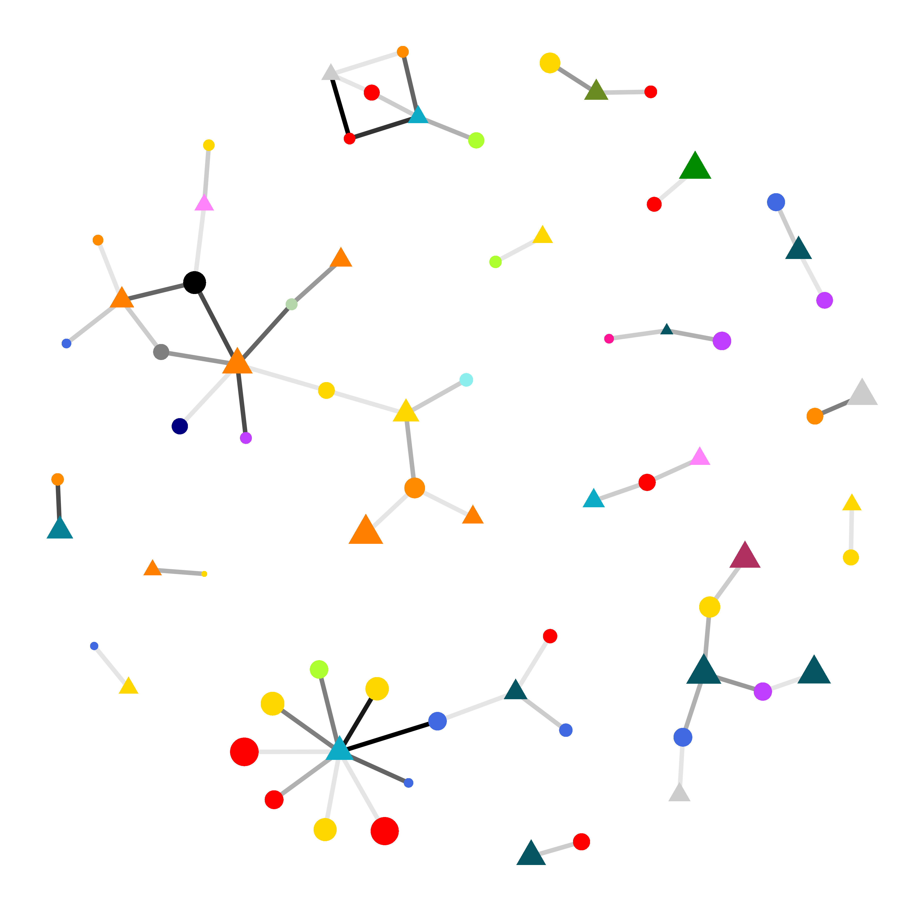
ggsave("test.png", width = 6, height = 6)
graph %>%
mutate(Genus = factor(Genus, levels = names(cyano_genus_colors))) %>%
ggraph(layout = "fr")+
geom_edge_fan(aes(alpha = weight), show.legend = FALSE) +
geom_node_point(aes(color = Genus, shape = type, size = Total_Abund), key_glyph = "point") +
scale_color_manual(values = c(cyano_genus_colors, phylum_colors), na.value = "grey") +
scale_size_continuous(transform = "log10") +
scale_shape_discrete(guide = FALSE) +
guides(color = guide_legend(
override.aes = list(shape = 17, size = 5))) +
labs(color = "Cyano Hub Genus")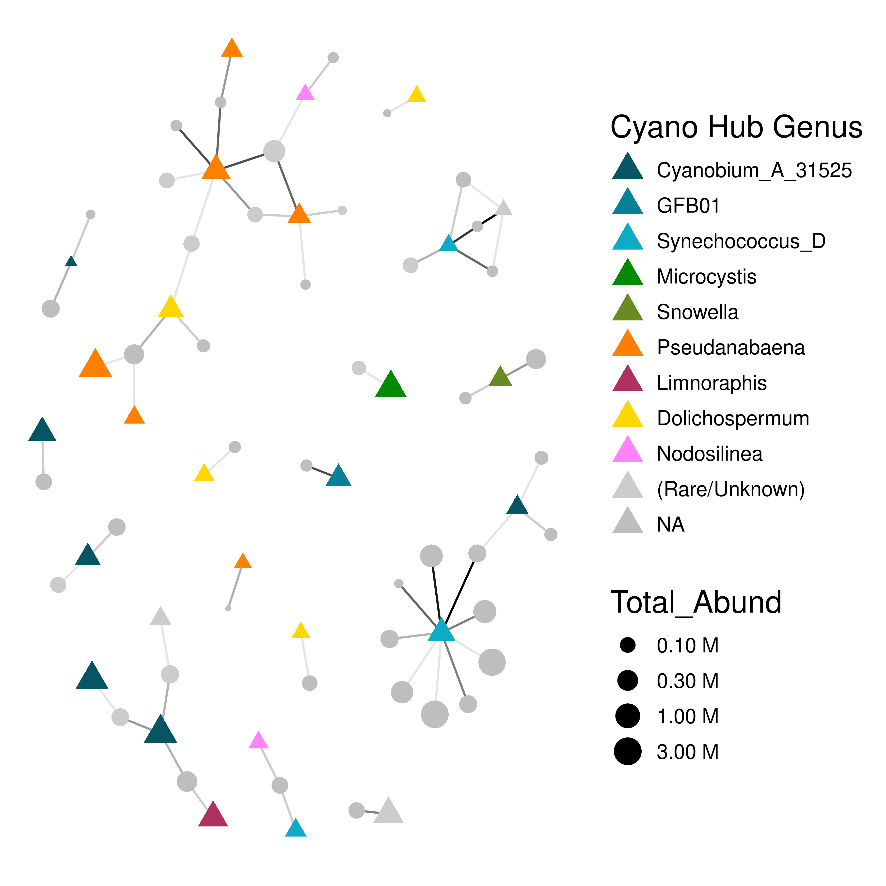
ggraph(graph, layout = "fr")+
geom_edge_fan(aes(alpha = weight), show.legend = FALSE) +
geom_node_point(aes(color = ifelse(!type, Phylum, NA), shape = type, size = Total_Abund), key_glyph = "point") +
scale_color_manual(values = c(cyano_genus_colors, phylum_colors), na.value = "grey") +
scale_size_continuous(transform = "log10", guide = FALSE) +
scale_shape_discrete(guide = FALSE) +
guides(color = guide_legend(
override.aes = list(shape = 16, size = 5))) +
labs(color = "Non-Cyano Phylum")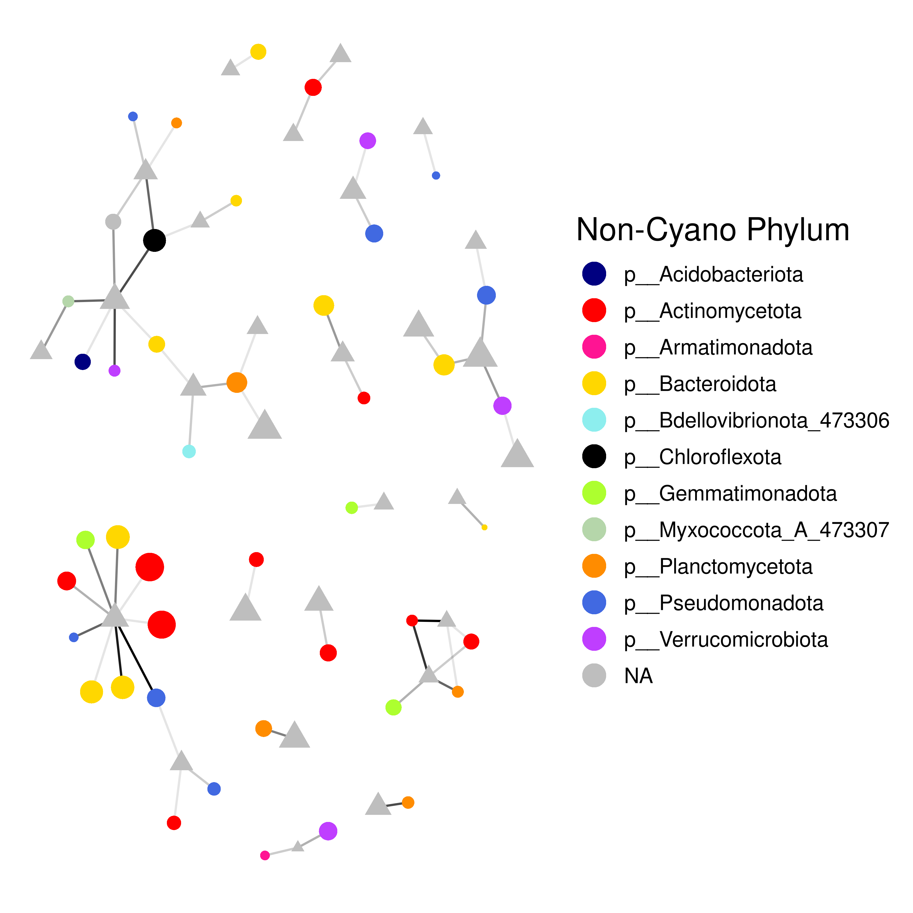
clustered <- igraph::cluster_walktrap(graph)
members <- igraph::membership(clustered)
mem_df <- data.frame(name = names(members),
membership = members)
top_mem<-
mem_df %>%
count(membership) %>%
slice_max(n = 5, order_by = n) %>%
pull(membership)
good_mem_df <-
mem_df %>%
mutate(membership = ifelse(membership %in% top_mem, membership, NA),
membership = factor(membership, labels = c(1:5)))
mem_graph <-
graph %>%
left_join(good_mem_df) %>%
dplyr::filter(membership %in% c(1))
set.seed(314)
ggraph(mem_graph, layout = "fr")+
geom_edge_fan(aes(alpha = weight), show.legend = FALSE) +
geom_node_label(aes(label = Tax_ID, size = Total_Abund, color = ifelse(type, Genus, Phylum)), label.size = NA) +
scale_size_continuous(transform = "log10") +
scale_color_manual(values = c(cyano_genus_colors, phylum_colors)) +
scale_x_continuous(expand = expansion(.2)) +
theme(legend.position = "none")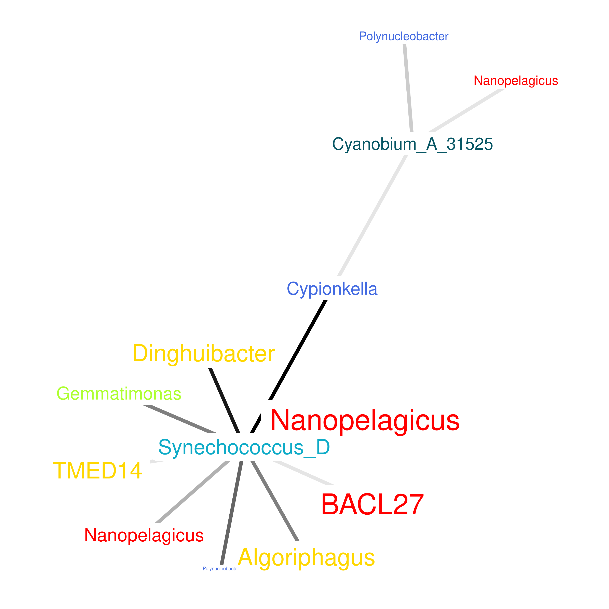
ggsave("test.png", width = 5, height = 5, dpi = 300)mem_graph <-
graph %>%
left_join(good_mem_df) %>%
dplyr::filter(membership %in% c(2,4))
set.seed(312)
ggraph(mem_graph, layout = "fr")+
geom_edge_fan(aes(alpha = weight), show.legend = FALSE) +
geom_node_label(aes(label = Tax_ID, size = Total_Abund, color = ifelse(type, Genus, Phylum)), label.size = NA) +
scale_size_continuous(transform = "log10") +
scale_color_manual(values = c(cyano_genus_colors, phylum_colors)) +
scale_x_continuous(expand = expansion(.2)) +
theme(legend.position = "none")ggsave("test.png", width = 9, height = 7, dpi = 300)mem_graph <-
graph %>%
left_join(good_mem_df) %>%
dplyr::filter(membership %in% c(3))
set.seed(312)
ggraph(mem_graph, layout = "fr")+
geom_edge_fan(aes(alpha = weight), show.legend = FALSE) +
geom_node_label(aes(label = Tax_ID, size = Total_Abund, color = ifelse(type, Genus, Phylum)), label.size = NA) +
scale_size_continuous(transform = "log10") +
scale_color_manual(values = c(cyano_genus_colors, phylum_colors)) +
scale_x_continuous(expand = expansion(.3)) +
theme(legend.position = "none")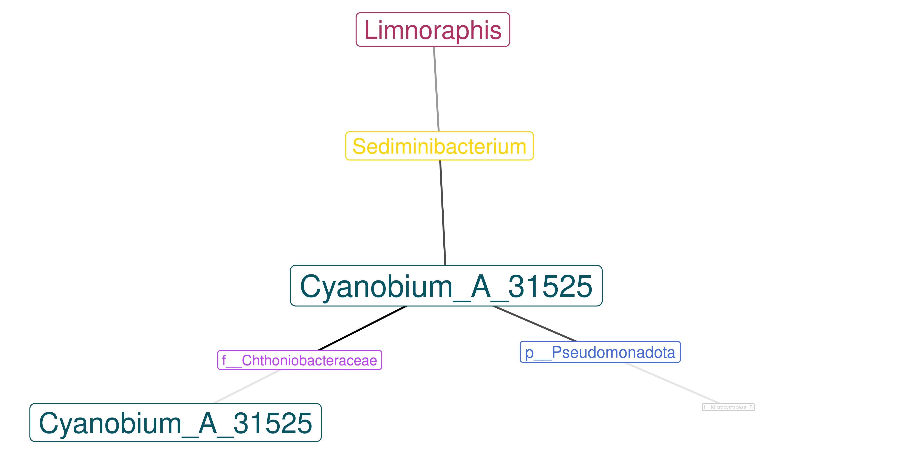
ggsave("test.png", width = 7, height = 3.5, dpi = 300)